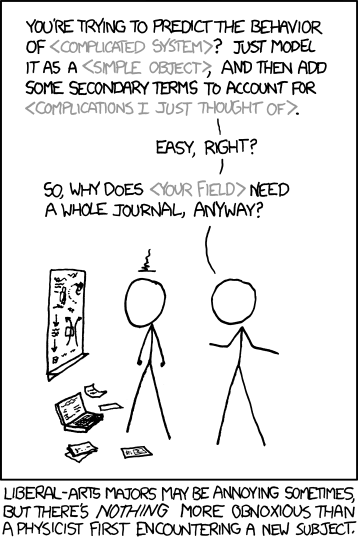
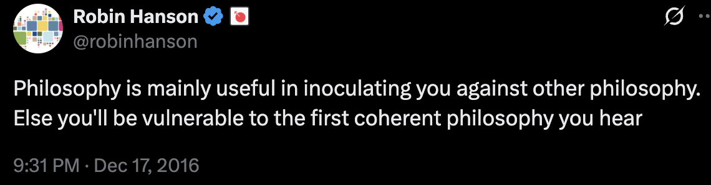

Psychometaphysics
A long time ago, in a server far far away, I had an argument about a thing I wanted to write about in a blog post. I‘m going to take this opportunity to actually talk about it publicly, because those guys are the perfect foils to bounce my opinion off of. Everything is very heavily edited and anonymised to make it clear that it‘s not me using this website as a makeshift shower to argue in, but a Galileo Galilei style Salviati/Sagredo/Simplicio essay that also happens to be a true story.
Dramatis Personae:
☀️Princess: literally me; STEM-educated but not an asshole about it
👧Lady-in-waiting, supporting the Princess
👨Tweedledee and 👨🏿Tweedledum: two techbro foils, a physicist and a programmer
Various Pawns
Call to Adventure
It all started with a simple question. I'm a Discordian - what does that mean?
Pawn: So Discordianism is not something you made up as a meme?
👨🏿Tweedledum: Unfortunately no, lol, it‘s so fucked. It‘s like when video games need an ideology to explain why the jerk faction exists.
👨Tweedledee: Discordianism is cringe not because it’s bullshit, but because it’s not bullshit enough. Pastatfarianism is as bullshit as they can get away with, and that makes it fun. Discordianism is just eh?
👨🏿Tweedledum: The cringe is that Discordianism is not a parody. It‘s unironic.
👨Tweedledee: Aaaaaaaaaa! Bacon-Necktie is a more sensible morality axis than this
☀️Princess: Discordianism‘s morality axis is order-disorder, which in fairly mainstream.
I present a thematic excerpt from Principia Discordia, the main text of Discordianism, on the „axis“:
HERE FOLLOWS SOME PSYCHO-METAPHYSICS.
If you are not hot for philosophy, best just to skip it.
The Aneristic Principle is that of APPARENT ORDER; the Eristic Principle is that of APPARENT DISORDER. Both order and disorder are man made concepts and are artificial divisions of PURE CHAOS, which is a level deeper that is the level of distinction making.
With our concept making apparatus called "mind" we look at reality through the ideas-about-reality which our cultures give us. The ideas-about- reality are mistakenly labeled "reality" and unenlightened people are forever perplexed by the fact that other people, especially other cultures, see "reality" differently. It is only the ideas-about-reality which differ. Real (capital-T True) reality is a level deeper that is the level of concept.
We look at the world through windows on which have been drawn grids (concepts). Different philosophies use different grids. A culture is a group of people with rather similar grids. Through a window we view chaos, and relate it to the points on our grid, and thereby understand it. The ORDER is in the GRID. That is the Aneristic Principle.
Western philosophy is traditionally concerned with contrasting one grid with another grid, and amending grids in hopes of finding a perfect one that will account for all reality and will, hence, (say unenlightened westerners) be True. This is illusory; it is what we Erisians call the ANERISTIC ILLUSION. Some grids can be more useful than others, some more beautiful than others, some more pleasant than others, etc., but none can be more True than any other.
DISORDER is simply unrelated information viewed through some particular grid. But, like "relation", no-relation is a concept. Male, like female, is an idea about sex. To say that male-ness is "absence of female-ness", or vice versa, is a matter of definition and metaphysically arbitrary. The artificial concept of no-relation is the ERISTIC PRINCIPLE.
The belief that "order is true" and disorder is false or somehow wrong, is the Aneristic Illusion. To say the same of disorder, is the ERISTIC ILLUSION.
The point is that (little-t) truth is a matter of definition relative to the grid one is using at the moment, and that (capital-T) Truth, metaphysical reality, is irrelevant to grids entirely. Pick a grid, and through it some chaos appears ordered and some appears disordered. Pick another grid, and the same chaos will appear differently ordered and disordered.
Reality is the original Rorschach.
Thus began the whole conversation.
👨Tweedledee: The whole point is to find a such a grid such that everything that is not in the grid is either false or useless. Nobody cares about capital-T Truth. Solving physics and finding the Theory of Everything would be cool, but computationally difficult
☀️Princess: Pshysical “Theory of Everything” is also just a grid and not the capital-T Truth. We‘re not talking about physical experiments here.
👨Tweedledee: It's not a grid, it's THE grid. There isn‘t anything notable in its sub-grids. Any model reaches a point where it‘s pointless to dig deeper.
☀️Princess: Don‘t confuse models and reality. The Theory of Everything is a model, and, frankly, it‘s not even that useful for most cases.
Tweedledee defends the position of “Western philosophy”, searching for the ultimate grid that can explain all of reality. And he equates such a grid with the pshysical Theory of Everything – a theory that can predict the outcome of any physical experiment. In other words, he directly asserts the Aneristic illusion, which makes him the perfect foil.
☀️Princess: The physical Theory of Everything is not the Capital-T Truth. It's just a model of physics. If I give you the ultimate field equation now, that wouldn‘t help you predicting what I say next. In practice, you‘d use other models, other grids. You won‘t ever reduce everything to the ToE; likely the best use you, personally, would have for this equation is to put it on a tattoo. The fact that a model that predicts the outcome of any physical experiment is the first thing that comes to mind when you hear „Capital T truth“ is Aneristic Illusion.
👨Tweedledee: Do you think the human brain is nondeterministic? With ToE and enough compute/data, it is totally possible to predict what a person would say
☀️Princess: You won't ever have enough compute/data. If we now get this theory of everything, it will be a symbolic victory, and then we will shrug our shoulders and interact with reality through other models
👨Tweedledee: They are not unsolvable on some basic universal level. They are as unsolvable for us as modern science is for a Mesopotamian.
☀️Princess: What do you know about the basic universal level?!
👨Tweedledee: I know that we have one problem left – befriending gravity with the rest of the flock
☀️Princess: Is it like when Niels Bohr, when he decided to go into physics, was told that there was no point, physics was already over?
👨Tweedledee: It‘s not going to be like that, we‘re already at the smallest energy scales, there just isn‘t anything lower
☀️Princess: That's similar to what they said to Bohr
👨Tweedledee: „Back then“ was before we built CERN and studied the microwave background
☀️Princess: And now is „back then“ before the next major achievement
👨Tweedledee: You don‘t seem to understand the current state of science. We‘re already at the pshysical limits of energy at a point.
☀️Princess: I understand it quite well. But we may still find out that it‘s not even about energy at a point.
👨Tweedledee: If it‘s not about energy, then we won‘t even be able to observe it, and therefore we don‘t care.
So, how is treating Theory of Everything as The grid problematic?
The Two Cultures is a famous lecture that contrasts how tech and humanities conceptualize studying the universe. Techies see a large universe, in which humans are a special case; they may be interesting in many ways, but insignificant on the universal scale, being limited to the surface of one planet. Humanities see a variety of human activities, among which studying the physical laws beyond our planet is a special case; it may be interesting in many ways, but irrelevant in most people‘s actual lives. The author sees the widening rift between these two cultures as a serious problem, limiting our ability to understand the world.
Tweedledee is the exreme “techie” - he wants to reduce all questions of the structure of the world to physics, and considers the complete theory of physics, capable of predicting the outcomes of any experiment, to be the pinnacle of understanding. Human behavior is a special case of a physical experiment, reducible to physical processes in the brain.
The issue with this picture is that it is correct. If you know the positions of all particles and forces acting on them and all the physical laws underlying it, then you can calculate everything that happens in the brain and precisely predict people's behavior. Not literally you, of course – you don‘t know the laws, and even if you did, all this data won‘t fit into your brain – but in theory! Even if some kind of non-epiphenomenal „soul“ exists, that can influence your behaviour, you can just include it into the law. Anyone who knows physics would see that as obvious and undeniable.
But this idea is only true because it‘s almost tautological. It doesn‘t really constrain expectations much. It doesn't really clarify more than „reality exists and follows rules“. But since this map is ostensibly very close to the territory and contains literally everything, it tends to instill a completely uncalled-for confidence in your own understanding. When your map is seen to be this close to the territory, your capacity to distinguish the map from the territory atrophies, and you just take all your beliefs as if they were reality. The techbro nominally admits that yes, humans are flawed and biased, and yes, our intelligence is limited by the compute of our brains, and yes, we see reality only through the lens of our perception. But he does not have it in his bones, he doesn‘t see every thought his brains tells him as having come through an imperfect lens, and he has no mental toolset that lets him model the distortions and correct for them. The archetypical techbro error is “I know this one thing, so I know everything.”1 Without deep intuitive understanding of the map/territory distinction, “anything is reducible to physics” feels equivalent to “my understanding of anything is reducible to my understanding of physics.” The first is a territory-statement, the second is a map-statement, but the techbro underestimates the enourmousness of the gap between those.

A lot of arguments between tech and humanities end up looking the same. One talks about the map, the other talks about the territory, and neither understands the other. Any criticism of human understanding of a physical law is seen as a criticism of the physical law itself. Criticizing the idea of reducing everything to physics feels same as criticism of the fact that everything can be reduced to physics. And since the reducibility of all observed phenomena to physics is beyond doubt, tech sees humanities as idiots.
Pawn: Do you think that in the foreseeable future the time will come for physics to perfectly explain everything? My normie common sense tells me that it‘s very unlikely.
👨Tweedledee: I'm pretty sure yes. The problem isn‘t even lack of data, we just have a mathematical analysis paralysis about combining the theories
☀️Princess: Okay, let's say this is true, and we‘ll end physics at observable energy levels. But then the ToE won‘t be the capital-T Truth, but an approximation up to the point where we in practice don‘t care about digging deeper?
Pawn: Don‘t you think that maybe the model will be pretty accurate but not perfect? In Newton‘s time nobody even knew that measurement limits exist.
☀️Princess: Was it Feynman who said that when we find the ToE, physics will only really begin?
👨Tweedledee: It will be perfect in every practical sense. We have found all the fundamental forces and their limits. The only thing left is to round up the math. That‘s where physics ends by definition.
Pawn: Maybe we don‘t know about something deeper that is yet undiscovered but important? There almost certainly is something. Newton couldn‘t know about quantum gravity. I think it‘s reasonable to assume that the end of physics won‘t happen this time, just like it didn‘t happen the last time we thought it was coming.
👨Tweedledee: You are trying to peek behind the veil of Maya and see the Truth and not the Tree. 2 But you already see the outlines of the Tree, and this makes you uneasy. Y‘all really don‘t understand fundamental physics. On every known level of abstraction, we already know the most fundamental component, except gravity.
Pawn: Are you certain that there aren‘t any deeper levels that we haven‘t thought about? We crack gravity, and open some other Pandora‘s Box, just like it happened every time in the history of physics?
👨Tweedledee: There could be an invisible, intangible, inaudible pink unicorn in the room, but why do I give a damn? Even if the box opens, it would at worst contain operations on known energies. Thank God gravity doesn‘t produce any particles and can only operate on the existing ones. And we already know that those particles don‘t do anything wonky.
☀️Princess: Once upon a time, no one knew about quantum mechanics, and we all thought that tiny billiard balls won‘t do anything wonky either.
👨Tweedledee: The current situation is so far away from that conceptually, that, just lol
Humanities study, among other things, how ideas develop, spread and change. Empiricism, theism, socialism, reductionism, impressionism, modernism, and other “isms” are all ideas. Questions like „why was Aristotelian thought so dominant for so long in Europe, before falling out of fashion“ are in the domain of humanities. History is full of ideas that seemed true to certain people at certain times, even though now we know them to be wrong. Why did so many people take fascism seriously back in the day? Were they all morons?
The idea that everything can be reduced to physics is also an “ism,” specifically physicalism. This is also an idea that arose, spread, and evolved. Just like any other ism, it has cultural assumptions, a philosophical basis, historical vestiges and implicit assumptions. And when people think with that idea, they display the universal human irrationality in the same way as with any other ism. If you are not familiar with what humanities say about your ism, if you do not know how people form ideas, and what forms your perception of reality, it‘s very easy to slip into thinking that this one idea is just the raw reality, not noticing all the personal idiosyncratic baggage you bring with it.

To understand the universe, you need to understand humans, because a human is the one doing the understanding. To understand the territory, it is necessary to understand maps, because you can only see territory through maps.
👨Tweedledee: No, you need ToE, I‘ve explained why. Working with physics without ToE is like working with math without knowing all the axioms. It‘s possible, but eh
☀️Princess: Errr… Are you also trying to find some kind of universal ur-set of axioms that is applicable in all situations?
👨Tweedledee: WDYM „trying” - it’s definitely possible
☀️Princess: No. It was a clever attempt, but in the end it turned out to be impossible
👨Tweedledee: Fuck the incompleteness theorem in this case. We analyze reality, the ultimate judge. You don‘t need to make your system a thing-in-itself, you are describing what actually exists. Is it possible to construct a system of axioms that would describe itself? No, this is obvious fucking nonsense , you need an external system to build it inside of. Is it possible to construct a system of axioms that describe a given model? Yes, of course. We have a model, we just don’t know what all the axioms are. It‘s awfully simple - you‘re given a program and you need to study it and provide an exact copy. But they don‘t care about the code, but only about the executable. So you don‘t have to recreate the code. You just need to write code that is identical post-compiling. That‘s fucking it. It‘s difficult. Hellishly difficult. But not impossible.
☀️Princess: By the way, I wouldn’t be very surprised if in the end it turns out that our universe is capable of some kind of hypercomputation, but our merely Turing-complete brains can‘t conceptualize it
👨Tweedledee: Highly doubtful. There have to be some really fucking special boundary conditions. And then everything just breaks. Including conservation laws. And those seem to be woven into the very essence of all interactions
☀️Princess: Have you noticed, by the way, that the law of conservation of energy already doesn‘t apply with the expanding universe?
👨Tweedledee: Uh? What's this nonsense? The expansion of the universe does not generate energy. 100%.
☀️Princess: Here3
👨Tweedledee: Yeah that's quantum gravity for you
☀️Princess: Not even quantum. We knew this since general relativity, since 1920
👨Tweedledee: Because it's an interaction between the expansion of the universe and energy quanta. From which, it would seem, the quantum nature of gravity should follow. But somehow not
Here I recall historical examples of the pitfalls of the idea of an “utimate grid”.
“Hilbert program” was an idea from a time when mathematicians were still young and innocent. Once the concepts of “axiom”, “theorem” and “proof” were formalized, an idea came to them – to constuct the ultimate set of axioms that covers all needs forever. The holy grail was a purely mechanical procedure that you can use to confirm or debunk any claim. The project ended when Kurt Gödel proved that it was impossible, which sent mathematicians of that time (and many still now) into an existential crisis. As my college pal told me, “mathematicians proved that mathematics does not work.” This, of course, is an overly dramatic misinterpretation of the discovery, but if one cannot decouple the map from the territory, if one intuitively works with mathematics and their idea of mathematics with the same mental tools, their brain short-curcuits 4
The fact that energy conservation does not work in an expanding universe is now a known fact, and it's no longer surprizing to physicists. But in the past it perplexed even Einstein – his intellectual skirmish with Emmy Noether was about her theorem wrt general relativity, and Noether turned out to be correct and earned some glowing praise from Einstein. Since Noether discovered the mathematical source of conservation laws, the correct response to "energy is not conserved in an expanding universe" should be “OK.” The theorem shows that what we call “energy” is an abstraction over time symmetry, and when this symmetry does not hold, energy does not have to be conserved. But to Tweedledee, like many who don't study physics too deep5, "energy" still intuitively feels like some kind of objectively real entity, like a liquid flowing from object to object and causing them to move. Violating the law of conservation of energy seems like magic, a liquid appearing out of nowhere (“does not generate energy”). And even if you manually double-check all the calculations and make sure that yes, in this particular case enrgy is not conserved, it still feels like cheating. This feeling of perplexion is borne of confusing the map and the territory; the mere symbolic representation on the map seems like reality. When you look down at the ground and don't see the meridians.
The Demon-haunted world
Tweedledum intervenes and raises the stakes. This time, scientific knowledge is seen as the only correct way to perceive reality, and everything that does not fit into it is compressed into one point on the map - “unfalsifiable magical religious pink unicorn bullshit.” Or, to put it simpler, the ultimate grid is now scientism rather than physicalism.
👨🏿Tweedledum: What does all this have to do with Discordianism?
☀️Princess: Tweedledee annointed the physical Theory of Everything to be his favorite grid, I'm objecting to that.
👨🏿Tweedledum: Discordianism makes an interesting statement: reality is unknowable. Which, in a sense, is the second question of philosophy. Which can, yes, be answered in different ways. But personally, I see the answer from reduction as the most correct: if reality is unknowable, what is the difference between this question and the first question of philosophy?
👨Tweedledee: Fuck philosophy. Give me a sensible definition of an "unknowable" part of the universe. Unknowable part of the universe my ass
👨🏿Tweedledum: Allah. Allah specifically is defined as unknowable. You are allowed to not believe in Islam. But if you believe in Islam, then you believe in something unknowable.
👨Tweedledee: If your god is indistinguishable from statistical noise, then it is not a god, it's statistical noise. And they put it outside the universe, otherwise it'd be too obvious. So it's invalid. Unknowability is essentially non-interactivity. We need a thing that clearly obviously exists, but refuses any attempts to interact with it. Otherwise it's either not a part of this universe, or not unknowable.
👨🏿Tweedledum: Yes. This is why I believe that ideologemes that answer “no” to the second question of philosophy are stupidly outdated. They are indistinguishable from religion. They require belief that their description of the indescribable is true.
☀️Princess: “Unknowable” in this case does not mean “there is no truth.” It means “you, you specifically, with your actual physical brain as it is, won’t be able to know.” It's pragmatics. Let me remind you that the title is “psychometaphysics”. This is about the properties of humans and how they understand reality and interact with it. It's not a fundamental property of the universe.
👨Tweedledee: The word "metaphysics" is equivalent to diving into shit with no right to resurface.
☀️Princess: But in this dialogue you've been doing nothing but metaphysics the whole time; you're just allergic to the word.
👨Tweedledee: I'm not searching for invisible pink unicorns; I'm directly asserting that they do not exist in the universe.
☀️Princess: That's a conclusion reached within metaphysics by philosophers. In the past it wasn't obvious. Until people started doing metaphysics.
👨Tweedledee: Yeah, and atheism is a religion, sure.
☀️Princess: Atheism is not a religion, but atheism as a phenomenon is studied within religious studies. Similarly, "A Theory of Everything may exist" is also from metaphysics; that too wasn't always obvious.
👨Tweedledee: "A Theory of Everything might exist" is a take as old as the first conscious observation. Because a Theory of Everything is just the idea: "hmm, I can explain this… what if everything can be explained, it's just hard". The fact that humanity needed 20,000+ years to even get to that thought is fucking cringe.
☀️Princess: HA HA, NO. That was not obvious at all, not even close. Plenty of ancient people's beliefs look like absolute batshit cringe to us now. And we only find the idea obvious today because of the work of philosophers. And right now there's surely a ton of equally cringe beliefs — yours and mine — that people in the future will laugh their asses off at.
👨Tweedledee: A Theory of Everything is the moment when physicists, instead of answering "why" with "fuck if I know", answer it with "objectively don't give a shit".
The conversation shifted to criticizing religion. No point posting the whole thing — it’s just the standard Richard Dawkins / “New Atheist” takes. Even though I don’t believe in God and dislike organized religion, I’ve always felt a certain contempt for Reddit-tier atheistic arguments. If you know you know; if you don't, just trust me that it’s all painfully bad. Without genuinely understanding the actual positions and thought processes of theists, if someone just sees them as “idiots who believe in fairy tales,” the atheist is wide open to making exactly the same mistakes — and the atheism in their head becomes another religion, only worse.
At that point the Lady-in-Waiting jumped in, as our resident theist.
👧Lady-in-Waiting: Yet another iteration of petty performative edgelording. Reaching the exact same rock-bottom cringe level as [REDACTED], except [REDACTED] at least sincerely believes what they’re saying and just doesn’t know how to argue, whereas Tweedledee is deliberately acting like an asshole and for some reason thinks it’s cool.
👨Tweedledee: You know, if I’m a petty edgelord, then Muhammad – who wrote a whole fucking treatise on how to live, supposedly from an omnipotent being, in verse form, and whose life story is X-rated – he must be one of the greatest edgelords in human history. Me < … < Muhammad < Shadow the Hedgehog.
👧Lady-in-Waiting: I barely follow your logic. And I think we have very different understanding of the term “edgelord.” I’m not against criticism of religion (though the passage above is peak r/atheism and forcing modern logic into the past is horribly cringe), I’m against this kind of performative rudeness and mockery. On this particular issue it ends up being the exact same “lol believers so dumb” as [REDACTED].
👨Tweedledee: Anyway, dropping some insider info for the Lady-in-Waiting: I actually have a fair bit of experience interacting with Orthodox Jews. And, well, I kinda get how they think. And I find it fucking hilarious. Seriously using a 2000+ year-old rulebook that has blatantly obvious scientific and moral fuck-ups is something only a complete moron would do. Since there aren’t that many of those, the rest reinterpret the 2000+ year-old fuck-ups in ways that don’t make themselves gag. I’m not saying all religious people are uneducated trash and atheism is a mark of the übermensch. I’m saying that in a head-to-head comparison of usefulness to humanity right now, the atheist is winning. Has been for about the last 100 years, give or take.
☀️Princess: Let me tell you something fun. I first reached a set of ideas on my own (for my own reasons), that I was ready to defend on fairly rational grounds. They just happened to more or less line up with Buddhism. I only learned it much later, post-factum, when I researched Buddhism for a Buddhist character in a roleplay and discovered that my ideas aren‘t new and already have a name — they’d already been expressed by all those Buddhas and Bodhidharmas. Do you consider that “blindly following dogma without understanding”?
👨Tweedledee: Buddhism is more of a philosophy than a religion anyway, but it’s all just a mess and I don’t give enough of a shit to sort out the details. The Bible clearly spells out a philosophy of cooperation, but it comes with a ton of caveats and that’s why it sucks. Buddhism is probably about the same, just in anime form.
👧Lady-in-Waiting: What exactly are the advantages of atheism over Zen Buddhism, lol?
👨Tweedledee: Higher chance of generating the correct understanding of the world.
👧Lady-in-Waiting: How?
👨Tweedledee: Run an experiment.
👧Lady-in-Waiting: Uh??? Buddhists can’t run experiments?
👨Tweedledee: Buddhists never came up with it. It never occurred to anyone to test the theory, or at least notice that it’s absolutely unprovable. It never occurred to anyone that absolute unprovability is, on a very basic level, equivalent to falsity.
☀️Princess: You do realize Newton was deeply religious, right? Hell, the scientific method was invented by Francis Bacon — not an atheist in the slightest.
‘More philosophy than religion’ is an interesting take with a very curious history. Allow me to give you a little historical background.
The word “religion,” when it first appeared in that form, implied using Christianity as the yardstick for all beliefs. And in the early days of European religious studies, Buddhism was indeed perceived as a variation on the same theme (we believe in Jesus, they believe in Buddha). There‘s been a lot of cultural exchange with Asia since then, and we realized there’s basically nothing in common here, and lumping the two phenomena under the same word makes about as much sense as putting apples, pears, oranges, and sea urchins into a single category “roundedible.” Yet due to cultural inertia we still project Christianity, Buddhism, shamanism, Aztec beliefs, and the cult of Dionysus onto the exact same mental map, and instinctively fill all the blank spots with our preconceptions about Abrahamic religions. Even when we invent a new religion for a fictional world, we still end up with something that slots neatly into that same map.
As ongoing cultural exchange continued, many Westerners noticed that meditation is actually good for mental health, and the radical humanism and compassion toward all living beings that the Buddha taught is, frankly, a pretty solid way to live your life. The idea of universal compassion isn’t new to the West – Jesus said that. But for secular atheists (and especially /r/atheism types), Jesus’ teaching had already been smeared by secular prejudices and shrunk to a single point on the map – “that thing only fundies believe” – and so it is reflexively rejected. Buddhism no longer fits that map very well; the pattern doesn’t complete, the thought-terminating cliché fails to activate, and the atheist is forced to look at it critically, unsqueeze that point on the map, and actually think again.
That ‘more philosophy than religion’ line is a kind of „separate magisteria“ of Western intellectuals: we want to practice this religion, it works, there are real benefits, but we don’t want to be on the same spot on the map. Buddhism has just as much unscientific baggage as Christianity does. Both are “philosophies,” and both include belief in the “supernatural.” Practicing either one yields mental-health benefits. But declaring yourself a “secular Buddhist” and keeping only the practice while tossing out the magic feels far less internally cringe than doing the exact same thing with Christianity. The collapse of the false category “religion” finally let people do what they could, in principle, have been doing all along since the dawn of enlightened atheism – they just never thought of it.6
This brings me back to my earlier idea of the literary genre of logic and rationality. Logic, rationality, science, atheism, and rejection of the supernatural are pretty nice. But on our internal map, this slice of reality is drawn with certain symbolic legend that doesn’t necessarily correspond to reality itself. A guy in a white lab coat peering into a microscope stands for “science,” even if it’s just a priest who dressed up that way. A chain of reasoning that proceeds from premises through inferences to conclusions looks like logic, even if the argument actually obeys no formal logic whatsoever. Spock, calmly and emotionlessly stating the mission success probability to five decimal places stands for cold rationality, even if the number was pulled out of thin air. On the flip side, loud emotional outbursts or an old man in robes clutching a crucifix and speaking in Church Slavonic – those are the conventional symbols for the enemy of rational thought.
The word “prayer” still firmly belongs to the enemy genre of religion; the word “meditation,” thanks to the efforts of secular Buddhists, has been successfully yanked from the religion genre into the genre of perfectly cromulent psychotherapy. In reality the two practices are quite similar, both religiously and scientifically. But blurring the line between map and territory makes us think about them in radically different ways. Sometimes it feels like the symbols on the map actually exist in the real world, like you could trip over a meridian…
When the Buddha explained why karma isn’t tied to a specific physical body, he called it “santana” — a stream of separate dharmas connected to each other by the principle of pratītya-samutpāda. That’s religion and mysticism. If a rationalist talks about “bad karma,” it’s only ever metaphorically; hearing those words makes Richard Dawkins’s eyeballs roll upward on pure spinal reflex. Thousands of years later, Eliezer Yudkowsky, founder of the rationalist movement, promoted the idea of cryonics — freezing your body after death in the hope that one day you can be thawed and revived. Many people worried that the person revived wouldn’t be the same person, just a copy with your memories and personality. Trying to explain why there’s no reason to fear that, Eliezer — starting from fundamental physics — described why personal identity is not tied to specific atoms, but emerges as a sequence of states connected causally. If you strip away the scary Sanskrit words, these are very similar ideas. Yudkowsky’s explanation differs in details, but he and the Buddha could easily have found common ground. They disagree in the same way followers of different interpretations of quantum mechanics disagree, or the way economists from the Frankfurt, Keynesian, and Austrian schools disagree — not like an atheist and a believer, but like two theorists working in the same field. They even used similar metaphors: Yudkowsky’s “river that never flows” and Buddha‘s “mindstream.”
I’m not trying to claim Yudkowsky plagiarized the Buddha here. I’m pointing out that if Yudkowsky’s blog posts feel a priori less mystical to you than the Buddha’s sutras, your map is leaking into the territory. They are speaking in different literary genres, using different symbols on their respective maps, but they are often trying to describe the same territory. Scary Sanskrit words like “skandha” are used on religious maps, while scary Latin words like “determinism” are used on scientific maps, but you shouldn’t immediately assume they’re talking about different territories.
☀️Princess: Tweedledee, why does anything exist in the first place?
👨Tweedledee: Fuck if I know. Thousands of options.
☀️Princess: Name three.
👨Tweedledee: Actually I’m a fan of the weak anthropic principle.
☀️Princess: …which is a metaphysical claim.
👨Tweedledee: Bullshit. Five hundred years ago it was metaphysics; now we know enough astrophysics to say yeah, the universe simply permits the existence of observers. Those are its laws. Why? I don’t give a shit. Well, not that I literally don’t give a shit, but definitely not enough to go poking around the initial singularity without real data and start making claims that are physically unverifiable.
☀️Princess: Please give me the experimental protocol that would confirm the weak anthropic principle.
👨Tweedledee: You can just take it as a given because you have zero causal influence on your own existence in the past.
Pawn: So can we just take Allah as a given too?
☀️Princess: The weak anthropic principle can be taken as a given, right? On the basis of non-experimental reasoning, right? Purely on the basis of metaphysics, right? So why that and not Allah?
👨Tweedledee: For much the same reason I can take my own existence as a given.
☀️Princess: And can you experimentally confirm that little inference of yours?
Here and below I’m basically digging with a knife right at the seam where map meets territory. On one hand, physicalism/scientism/verificationism (with all differences between those swept under the rug) is declared the one and only correct grid, while “metaphysics” gets tossed into the same bin as religion and magic. On the other hand, plenty of their strong opinions about the nature of reality simply do not fit inside that grid, so they have to be impaled on one of the horns of the dilemma — either reject them on the same grounds they reject God, or try to somehow cram them into the grid anyway. Or, alternatively, have a sudden Zen-student-hit-by-stick moment and realize that metaphysics and religion are not the same kind of stuff, no matter how much they bleed into each other on the map.
👨🏿Tweedledum: Atheism is better than Buddhism because it doesn‘t include anything. It’s literally just the “nuh-uh” opinion about the supernatural nature of the world. That’s it.
👨Tweedledee: Atheism is better than Buddhism because it doesn’t include metaphysics. Or, depending on whether nongolfing is a hobby, at the very least it comes with an asterisk that says “any metaphysics can be tossed out the window for being utterly useless.” Appealing to supernatural in arguments in 2024 is cringe. It used to be cringe in the past, too. But now it’s more obvious than ever.
👨Tweedledee: Honestly, this is an insanely stupid bias. When people are choosing between two otherwise equivalent descriptions of a room, one of which has an invisible pink unicorn and one doesn’t, they pick [table, chair, …, bed] instead of [table, chair, …, bed, invisible pink unicorn]. But for some reason when it comes to philosophy, the choice between [verifiable property 1, verifiable property 2, …, verifiable property n] and [verifiable property 1, verifiable property 2, …, verifiable property n, metaphysics made of unverifiable properties] suddenly isn’t obvious at all. And on top of that they try to convince you that you’re not using [table, chair, …, bed], but [table, chair, …, bed, no invisible pink unicorn].
👨🏿Tweedledum: Because people like metaphysics that strokes their fragile feelings. Because human thinking works like [object 1, …, object n, (why I’m a good person)]. And when they see a system that’s just [object 1, …, object n], they fill the gap with whatever they see. They see emptiness and they fill it. But emptiness has to be framed somehow. So they frame it with some bullshit. For them it’s already an existential threat if someone else fills (why I’m a good person) with something different from their version. That would prove all their beliefs are fucked.
👨Tweedledee: In theory I don‘t mind pure metaphysics; it’s just that any metaphysics postulates the existence of certain elements that supposedly affect things but themselves can’t be affected. Which on a fundamental level is garbage. It only makes sense in math for building extremely simplified models.
☀️Princess: “Because it doesn‘t include anything” is a weird criterion. By that logic “not knowing physics” is better than “knowing physics,” since not-knowing-physics also includes nothing and has no opinion about the mathematical structure of the world. You’re concluding that having no opinion about X is better than having one. Meaning that in a hypothetical situation where X actually exists and is relevant, you’re a priori ruling out the possibility of ever knowing it.
👨🏿Tweedledum: Well, like, if religions were treated strictly as a study of humanistic values, I’d have way fewer problems with it. But religiosity inevitably includes claims about the nature of the physical world. And when those claims turn out false, it doesn’t force believers to abandon/revise the religion; it forces them to abandon/revise the tools for understanding the world. Religion refuses to just be a study of behavior. Religion always drags metaphysical mechanisms along with it. Which, yeah, are completely fucking useless. Better to have no opinion about metaphysics than to have one. Because metaphysics doesn’t exist.
👨🏿Tweedledum: The argument “but what if we should have an opinion just in case it exists” goes in the same garbage bin as “but shouldn’t we believe in God just in case he exists”: neither one explains why this particular metaphysics/God deserves belief over any other.
👨Tweedledee: I don’t use metaphysical objects in my models. That’s it, that’s my claim. You can call it “metaphysical” if you want, I don’t give a shit. God isn’t needed in the model of the solar system. His absence from the equations of motion isn’t a metaphysical claim.
y = kx + b contains no metaphysics.
y = kx + b + 0*GOD contains metaphysics, but no metaphysical objects.
y = kx + b + GOD is just garbage.
At the same time, versions 1 and 2 are essentially equivalent, so I use them interchangeably because their non-equivalence is a matter of cheap, useless rhetoric.
👧Lady-in-Waiting: You don’t use the objects, but you regularly make metaphysical claims anyway.
All this technobabble is basically the proverbial five blind men from the parable groping Occam's razor and saying it smells like blood. Occam‘s razor is actually an excellent point to bring up here. But there's a definite rift between the "everyday" understanding of Occam's razor and the way it actually works on a fundamental level. Eliezer Yudkowsky criticized science and experimental verifiability, and it's precisely the understanding of this rift that, in his view, distinguishes science from rationality. That's the angle I'm trying to work from here, to add some nuance and nudge toward that moment of realization.
☀️Princess: Something that isn't experimentally verifiable by the scientific method could theoretically turn out to be relevant.
For example: suppose there's some god who does only one thing: watches whether you've ever eaten pork in your life, and if you have, he teleports your consciousness to eternal hell after death. Otherwise, to eternal paradise.
It would be useful to know about this! Because if that's the case, you'd better not eat pork.
Of course, the a priori probability of this is extremely low. But if it did happen to be true — it would be useful to know about it!
👨🏿Tweedledum: Princess! In that case, being an atheist is equivalent to believing in the opposite god! If you believe in the pork god, but the real one is the beef god, then you're wasting calories for nothing!
👧Lady-in-Waiting: Tweedledum, I think you missed what the Princess was saying.
☀️Princess: I'm not trying to shoehorn Pascal's Wager in here. I'm just saying — knowing about this non-experimentally verifiable thing would be useful! And if there were some way to find out, you should do it! If you could figure it out through reasoning about metaphysics — you should reason about metaphysics.
👨🏿Tweedledum: That's a well-known claim in favor of religion. It's literally Pascal's Wager. If there's an unverifiable god, you should believe in MY unverifiable god.
☀️Princess: That's not the argument. It's not about acting on some low probability.
It's about the fact that knowing whether it's true or not would be practically useful.
This is a metaphysical claim that's not experimentally verifiable, and yet it would give you positive utility from knowing for sure whether it is or isn't, and which of the two opposite gods exists, if any.
👨🏿Tweedledum: How would you obtain information about a metaphysical object? With what?
☀️Princess: Do you agree with the statement that it would be useful to know?
👨🏿Tweedledum: No. That would be unverifiable knowledge.
👧Lady-in-Waiting: Evasive maneuvers. Also, you’re once again refusing to engage with the Princess’s proposal on her own terms. Damn, Princess, you were absolutely right about people not understanding hypotheticals. Tweedledum, you’re rigging the thought experiment you‘ve been given.
👨🏿Tweedledum: Well, like… fine. Okay. The knowledge in a vacuum would be useful. But you can’t obtain it through belief in metaphysics. Therefore that vacuum-knowledge would itself be some form of faith. Which is not useful.
👨Tweedledee: In general, the usefulness of that knowledge is about the same as the usefulness of knowledge about electrons for a caveman. If you magically beamed it into his head, he wouldn’t exactly do a whole lot with it. Apart from the basic “be less afraid of lightning.” In any case, talking about the usefulness of knowledge about the pork god is pointless; knowledge doesn’t work that way. It doesn’t pop out of nowhere. That’s metaphysics.
☀️Princess: Let’s do the reverse example.
People want to colonize the nearest galactic cluster and send a generation ship there. You want to go with them — Earth is overpopulated, you think you’d be better off there.
Unfortunately, by the time the ship arrives, it will have crossed the cosmological horizon, and Earth will never be able to get information back from it. A person on Earth literally has no way of ever finding out what happens there. If a Cthulhu spawns from the warp space and devours the ship, a person on Earth will never know. Whatever happens there is experimentally unverifiable.
It would be useful for you to know whether such a Cthulhu is going to appear! It would be useful to know what fate awaits you when you fly there! But you can’t find out directly via experiment, because the information physically cannot reach you due to the speed-of-light limit.
Yet you can reason using metaphysical considerations like the Copernican principle and the fact that it’s unlikely the neighboring galaxy has different laws of physics. So if there are no Cthulhus here, you can assume there won’t be any there either! (Though if you’re wrong and there are, you’ll never find out.)
Purely logical-philosophical reasoning about experimentally unverifiable aspects of reality gives you information that is relevant to you.
☀️Princess: Here are two mirror-image cases.
In both cases there is information you cannot experimentally verify, but that matters to you.
In the pork-god case you assume one thing, in the neighboring galactic cluster case you assume another.
Neither is experimentally verifiable.
Yet purely on the basis of metaphysical reasoning you conclude that the probability of the pork god is extremely low, while the probability that the same laws of physics apply in that cluster is extremely high.
👨🏿Tweedledum: That’s not metaphysics. Because all those grounds about physical principles and the absence of Cthulhu are physical facts, not metaphysical ones.
The smartest readers have already figured out that the pork-god example and the galactic-cluster example are, as far as experimental verification goes, exactly the same example. In both cases there’s an experimentally unprovable and unfalsifiable danger; knowledge of which would be useful for making decisions right now. One is phrased in the genre of religion (the same language as Pascal’s Wager), the other in the genre of rationality (taken literally from Yudkowsky). “These are physical facts, not metaphysical ones” — is the perfect hit on exactly what I’ve been steering toward. The difference between physics and metaphysics is purely one of genre, not substance. The exact same question is solved with different mental tools depending on how it’s labeled on the map.
☀️Princess: You cannot experimentally verify that the laws of physics are the same in that cluster as in this one.
👨Tweedledee: We conclude that the laws of physics are the same because no observations contradict them. Actually, scratch that: we CREATED the laws of physics on the assumption that they’re the same everywhere.
☀️Princess: And how do we know they’re the same everywhere?
👨Tweedledee: It’s the assumption required to even start doing anything at all. We simply assume the laws are the same everywhere because that’s simpler than assuming they’re different.
☀️Princess: Our astronomical data about very distant clusters is nowhere near precise enough to be absolutely sure some slightly different stuff isn’t going on there. We don’t even know the nature of dark matter. So in a hypothetical where the laws of physics really are different in the neighboring cluster, you’re a priori ruling that possibility out of consideration, right?
👨Tweedledee: We simply don’t have the math apparatus for different laws of physics, and we don’t build one until we need it.
☀️Princess: Once again — there could perfectly well be a physical phenomenon that is unknowable not because it’s supernatural, but because information about it physically cannot reach you across the speed-of-light barrier.
👨Tweedledee: We don’t make 16-mm bolts if we don’t have 16-mm wrenches. When they are needed, we’ll have both bolts and wrenches.
👨🏿Tweedledum: “We can’t know anything for sure, therefore we should beat women in the face for going outside without a hijab.” Solid plan. If metaphysics is so unknowable, how do you make any claims about it at all?
☀️Princess: It’s knowable — just not through experiments!
👨🏿Tweedledum: Then it’s a physical phenomenon. Princess is defending metaphysics.
☀️Princess: Fine, physics not metaphysics, doesn‘t really matter, your criterion of experimental verifiability sucks either way.
👨🏿Tweedledum: The laws of physics in the neighboring cluster are experimentally verifiable. Just not by us and not from here. But they are verifiable in principle. There could be an experiment that checks them.
☀️Princess: Well, if heaver exists, its laws are experimentally verifiable to the inhabitants of heaven. And to conclude that one place that is unverifiable to you but not to them exists while another doesn’t — you need metaphysics.
👧Lady-in-Waiting: Seriously, all I’m seeing is “our based assumptions that are necessary for us to work” vs “your rotten metaphysics that doesn‘t metter” and it seems to stem purely from some prior bias imo. It even stops you from engaging with the Princess’s proposals on her own terms.
👨Tweedledee:
Metaphysics: this is truth. Everything that disagrees with it is false.
Scientific hypothesis: let’s suppose this is truth. Everything that disagrees with it is a reason to change the hypothesis.
That’s the fucking difference.
☀️Princess: Good point, but notice that you’re making a claim about the nature of reality not because you ran an experiment and discovered there’s no heaven, but because “historically everyone who talked like that was wrong, so they’ll probably keep being wrong.”
👨Tweedledee: We generalize: “those guys obviously weren’t there and are just bullshitting. If they ever happen to guess right, it’s pure luck.” From metaphysical models you can’t extract anything physically useful in any non-random way.
☀️Princess: But there have been cases where exactly this kind of reasoning chain turned out to be correct.
People reasoned about hypothetical parallel universes for a very long time on all sorts of grounds and were systematically wrong — until Hugh Everett came up with the many-worlds interpretation of quantum mechanics, and then eternal inflation came along, and suddenly the latest multiverse hypothesis isn’t looking so crazy anymore!
Following this lead, the Tweedle gang dives straight into the problem of induction. David Hume already laid out pretty clearly why induction can only be assumed a priori and can’t actually be derived from anything else. Even though I‘ve only heard his arguments through five layers of game of telephone, that’s enough to know how to render the idea in the genre of rationality.
👨Tweedledee: Princess, do you think your next step northward will dissolve you into fucking nothingness in defiance of all known physics?
☀️Princess: No, I don’t. Why?
👨Tweedledee: On the basis of what data? Did you pull it from the future? That’s exactly why I don’t think the laws of physics will be different in that cluster. Because on the next step they won’t be. And then induction takes over.
☀️Princess: Yes, but you still haven’t experimentally checked what will happen in the neighboring cluster or on your very next step. You concluded it on the basis of some extra considerations like “the laws of physics have always been stable, so why the fuck would they destabilize now.”
👨Tweedledee: It’s a statistical claim. I admit it might not be perfectly accurate. But it’s good enough as a basis. We’ll adjust it later. As needed.
☀️Princess: Well, that’s induction: “if it’s always been this way, it’ll probably stay this way.” How do you justify that claim? Why not the opposite?
👨Tweedledee: Uh, it just so happens that time flows forward. If it flowed backward I’d say the opposite.
☀️Princess: Well, maybe in one second it will stop flowing forward. It’s always flowed forward until now, and now it’ll stop. On what basis do you conclude that’s unlikely?
👨Tweedledee: On the basis that it’s never happened? If it stops — we’ll think then.
☀️Princess: Yet you’re still acting from the assumption “if it stops we’ll think then, but for now we assume it won’t,” and not from the reverse “we expect it to stop, and if it turns out it doesn’t we’ll think then.”
👨Tweedledee: Because the current laws of physics don’t imply it. I see no point in thinking about things they don’t imply until I actually run into the phenomenon. Otherwise you can invent endless bullshit.
☀️Princess: Okay, but that’s justifying induction using induction. Negation of induction can be justified the exact same way using negation of induction. Look:
Tweedledee says: “The principle of induction is true — if it’s worked so far, it’ll keep working; if the laws of physics have always been this way, they won’t suddenly change next moment. I conclude the principle is true because it has always been true up to now — it’s never failed me yet (so it won’t fail me this time either).”
Anti-Tweedledee says: “The principle of anti-induction is true — if it’s worked so far, next time it will definitely be the opposite; if the laws of physics have always been this way, next moment they’ll be different. I conclude the principle is true because it has never been true before, it has always failed me (so this time it definitely won’t fail).”
Can you give a specific reason why you’re Tweedledee and not Anti-Tweedledee?
👨Tweedledee: Because I accept the premise of knowability of the world. That’s the only claim of mine I’m willing to admit is borderline metaphysical. And even that one is testable.
☀️Princess: Anti-Tweedledee also starts from the knowability of the world and concludes that next moment the world will be unknowable.
👨Tweedledee: I assume its knowability at every point in time.
☀️Princess: Why?
👨Tweedledee: Because otherwise you can’t do anything productive, because you can’t plan anything.
☀️Princess: But maybe on the very next step the opposite becomes true — maybe only in an unknowable world can you be productive?
👨Tweedledee: But right now that’s not the case. When it becomes the case — give me a call.
☀️Princess: Anti-Tweedledee: THEREFORE NEXT TIME IT DEFINITELY WILL BE THAT WAY.
👨Tweedledee: Remember I linked you that crazy witch‘s channel? You can read her posts; she fits the Anti-Tweedledee description perfectly.
☀️Princess: No, she’s an inductionist too. She made claims like “it worked for our ancestors, so it’ll work for us, ancient wisdom and all.” She never made the reverse claim “it worked for our ancestors, therefore it definitely won’t work for us.”
👨Tweedledee: Induction works, anti-induction doesn’t work. Anti-Tweedledee doesn’t work either. By induction.
☀️Princess: Tweedledee: “Therefore induction will keep working!”
Anti-Tweedledee: “Therefore induction will stop working!”
👨Tweedledee: The fact that Anti-Tweedledee works in an anti-universe is metaphysics and I don‘t give a fuck. All right, are you done talking bullshit?
☀️Princess: So far your line is basically “experimentally unverifiable considerations one level above physics are just default assumptions because I logically derived them (if I derived them), whereas your shitty metaphysics can fuck off (if someone else derived it).” Both are metaphysics. You just picked the most everyday, comfort-zone metaphysics that’s “good enough for my job, why fix what‘s not broken,” axiomatically declared “this rifle is mine” and decided everything else can fuck off. Which is of course a respectable choice, but someone else using the exact same cognitive meta-algorithm will say “the Quran works great for my life and feels comfy, why dig deeper, Allah wouldn’t tell a lie”
👨Tweedledee: Allah doesn’t work. If he did work, I’d be writing that assuming his existence is correct. But he doesn’t work. By the very definition of “works.”
☀️Princess: Have you ever in your life actually read the arguments of >120 IQ theists (there are plenty now and even more in the past, Newton for example) in favor of their faith?
👨Tweedledee: Bottom line: my attitude toward knowledge and information is ultra-radical right-utilitarian. Because any other options don’t produce working models except by pure accident.
👨🏿Tweedledum: Okay, maybe I missed something. Let’s say we need to know whether it’s the pork god or the beef god. That’s metaphysics, meaning we can’t know it. What’s the point of striving for something fundamentally unknowable? Same question about the neighboring cluster. If we can’t find out, yet we need to know, what do we actually do? What’s the practical use of metaphysics as a “science” that just says “it’s incomprehensible”?
☀️Princess: It doesn’t say it’s incomprehensible; it actually gives tools for answering experimentally unverifiable but still decision-relevant questions like “how confidently can we assume the laws of physics are the same in the neighboring cluster so our colony won’t die in agony?”
👨🏿Tweedledum: Fine. What does that have to do with the Buddhist hell for menstruating women?7
☀️Princess: Nothing. That was an example of a wrong metaphysical claim. Just like there used to be wrong physical claims like “combustion happens because of phlogiston” or “light travels instantaneously.”
👨Tweedledee: Is there a methodology for checking the validity of a metaphysical claim, and if yes, why call it metaphysical at all?
☀️Princess: We haven’t synthesized one yet, but we’re already making (and you do, too) some preliminary metaphysical inferences like “there’s no reason to think the universe will dissolve into chaos in the next moment, even though we have no way to test it.”
👨🏿Tweedledum: But can such a methodology even be synthesized at all? And if it can, why wouldn’t it just be physics?
☀️Princess: I don’t know. But it had already happened before that philosophical claims migrated into the domain of physics, so it’s not out of the question.
☀️Princess: Tweedledee, do you think that “what was true in the past must be true now” is true in general? Larry Wachowski was a boy back then, so he still is now? Or do you actually sort claims into those for which induction applies, those for which it doesn’t, and to what it applies partially? On what basis?
👨Tweedledee: I have up-to-date data that Wachowski is not a boy now. And is there even one single metaphysical claim that isn’t wrong? “What has always been true in the past is correct to assume will always be true in the future, provided nothing intervenes.” That’s my more accurate take on induction.
👨🏿Tweedledum: If metaphysics is the science of how to give the right answer when you can’t run an experiment, then it should have at least one use-case that stays correct in the absence of any possibility to run an experiment on it.
☀️Princess: Throughout the entire history of the universe the statement “if Tweedledee is alive, Joe Biden is also alive” has been true. Will it be true forever? There are tons of people who are boys right now but might stop being boys. You don’t have data on them. Yet you still don’t claim that everyone who is a boy now will remain one forever.
You assume that when you send a colony to the neighboring galactic cluster beyond the event horizon, the laws of physics there will be similar enough that you can count on it. Although once it flies beyond the event horizon you won’t be able to run any experiments.
By the way, did you know that mathematics was once considered a branch of metaphysics? Pythagoras himself said he was doing metaphysics. It was such a successful piece of metaphysics that we spun it off into its own discipline.
Here I messed up and got it wrong — it wasn’t Pythagoras himself who said he was doing metaphysics, but Aristotle who said it about Pythagoras. Still, it’s a pretty interesting example in this context. Pythagoras wasn’t really doing mathematics so much as numerology; he built an entire cult around numbers. For him mathematics was a mystical pursuit — the study of unobservable ideal forms. Plato’s idea of Platonic forms — objectively existing perfect, non-physical, eternal objects — was a direct development of Pythagoras’s ideas. Platonism is now considered an outdated view, yet this completely unscientific mysticism gave birth to all of mathematics more abstract than ancient architecture. The mathematics is undeniably useful in real life, even though it sits on a meta-level relative to physics. If back in ancient Greece there had been a hypothetical Tweedledum telling Pythagoras and Plato what a bunch of delusional cultists they were, he would have ended up on the wrong side of history. That’s roughly how knowledge has worked throughout history, because that’s how our psychology is wired.
👨🏿Tweedledum: Nah. Mathematics is verifiable and repeatable on some physical quantities. And about the colony — yeah, I personally won’t be able to check. But the colony will be able to. It’s not unverifiable in principle. It’s just unverifiable for me.
☀️Princess: The same is true for the people who end up in pork hell.
👨🏿Tweedledum: Only if they end up in hell. Verifiability beyond the horizon is based on the fact that something exists there. The fact that something exists there we can somehow verify. Like, we know about that cluster from somewhere. We could see it earlier, before it flew away. The very fact that the colony is flying there and will arrive already assumes all the reasoning. You start from “the colony is flying somewhere and will get there.” Pork hell is unverifiable by itself.
☀️Princess: Give me an experimental test that there are infinitely many prime numbers.
👨🏿Tweedledum: In a hypothetical situation? Well, you can always add one more. I get that mathematical abstractions have, well, levels of abstraction. But they are based in reality. In mathematics there are no quantities that are fundamentally unknowable in any way.
☀️Princess: You derived that with armchair reasoning. Now show me a physical experiment whose outcome would differ depending on whether there are infinitely many primes or not.
👨🏿Tweedledum: You take any repeatable process, repeat it, and count how many times it happened. If the primes run out but the process can still be repeated, then there are finitely many primes. I know counting to infinity is tedious, but strictly speaking, counting any finite number is possible. If we have infinite time, any finite number can be counted. So at minimum we can determine one of the outcomes.
☀️Princess: You’re basically proposing to enumerate the primes. But if they’re infinite, you’ll never find out. When you’ve done it a googol times, you still won’t know whether there are infinitely many or two googols.
👨🏿Tweedledum: But if you do it a googol times and the primes run out right there, you’ll know they’re finite.
☀️Princess: And how do you verify that they actually ran out versus there are more but you just haven’t counted far enough?
👨🏿Tweedledum: Well, if you can’t produce a new one, then it‘s impossible to count further.
☀️Princess: You don‘t think there is a calculation that is possible in principle but that I can‘t do! That’s a huge compliment.
👨🏿Tweedledum: Well, yeah. Strictly speaking, there’s no reason why any form of life couldn’t in principle perform any mathematical calculation at the lowest possible physical-operation level. Sure, most of them are colossal projects that humans can’t realistically pull off. But they’re fundamentally possible.
☀️Princess: Isn’t it fucking awesome that we have metaphysical reasoning that lets us figure this out without those colossal projects?
👨🏿Tweedledum: Awesome — as long as it has 100% overlap with verifiable facts.
☀️Princess: You’ll get to hell and verify it there.
👨🏿Tweedledum: If there is a hell.
☀️Princess: And how would you know whether there is or isn’t if you didn’t do metaphysics?
👨🏿Tweedledum: And if I did? You obviously do metaphysics. So… is there?
☀️Princess: Doesn’t look like it. But you do metaphysics, too. Out of the two unverifiable assumptions “hell exists” and “hell doesn’t exist,” you picked “hell doesn’t exist” — I agree with you, but the reasoning you used to pick it is the domain of metaphysics. Metaphysics can be done at different levels of veracity. Stephen Hawking did physics, and some guy in Podunk assembling an IKEA table and realizing that if he keeps pushing the wood will break was also doing physics. The former expands our understanding; the latter just uses known facts at a household level. Same with metaphysics. You chose to eat pork even though the probability of going to hell for it is non-zero. The considerations that led you to that choice aren’t “I experimentally checked and there’s no hell.” It‘s basic garden variety metaphysics.
👨🏿Tweedledum: No. I might even choose not to eat pork. It’s just not a thing I care about. In general I don’t bother asking whether some supernatural forces exist that will fuck me over for eating pork, drinking alcohol, killing flies, menstruating, or whatever else.
☀️Princess: You don’t worry about forces that might punish you for pork, but you do worry about forces that will put you in prison if you beat up your neighbor. On what grounds do you care about one but not the other?
👨🏿Tweedledum: When I read the Criminal Code of the Russian Federation, I did it keeping in mind the actual enforcement mechanisms and all that stuff.
☀️Princess: But not because you ran the experiment of beating up your neighbor and doing time for it?
👨🏿Tweedledum: I know the Criminal Code at least sometimes gets enforced.
☀️Princess: On what grounds?
👨🏿Tweedledum: I dunno… they write about it in the papers. My trust in information is based on my understanding of how that information is obtained. I know the church’s goal is to indoctrinate the population, so I believe their fairy tales very weakly.
☀️Princess: In medieval Europe they wrote a ton about divine punishments.
👨🏿Tweedledum: And we both know that was bullshit.
☀️Princess: But that’s not because you experimentally verified it. You never experimentally tested what the church’s goal was back then.
👨🏿Tweedledum: And all of it is crap that doesn’t work.
☀️Princess: So basically you reached conclusions based on things like the strength of arguments, not experiments?
👨🏿Tweedledum: And in the end I’ve never in my life seen anything supernatural, nor heard of anyone who reliably did. Those considerations are based on verifiability.
☀️Princess: [REDACTED] told us stories about seeing aliens. Tons of people have reported supernatural stuff. But you concluded they shouldn’t be believed — why exactly?
👨🏿Tweedledum: That anti-empiricism argument “how can empiricism work if you have to check absolutely everything” isn’t in good faith, btw. Because they reported some bullshit that contradicts everything else. People who’ve had clinical death report all kinds of random crap. That doesn’t mean there’s actually anything there.
☀️Princess: So how did you conclude it’s bullshit that contradicts everything else? Why don’t you seriously consider the hypothesis that you urgently need to stop eating pork or you’ll go to hell? The hypothesis that there’s no hell and pork is fine is equally unverifiable. Out of two experimentally indistinguishable hypotheses you picked one — you eat pork. Why that one specifically?
👨🏿Tweedledum: These are not equivalent things. Seriously. Why do you think “absence” is just some edge case of “presence”?
☀️Princess: Exactly how are they non-equivalent? Justify it.
👨🏿Tweedledum: No, you first.
☀️Princess: I’m justifying it on the basis of metaphysical considerations. But you don’t accept those.
👨🏿Tweedledum: Why does “there is no supernatural” have equal standing with “literally every supernatural thing anyone can imagine exists”?
☀️Princess: On what grounds do you draw the line between supernatural and not-supernatural? Quantum mechanics looked like total schizo back in the day. It took a huge amount of work to fit it into a materialist worldview, but that wasn’t a reason to reject it from the start, was it?
👨🏿Tweedledum: Okay, I hereby postulate that there exist kwooks that are attached to every living human and lurce. What do you say to that?
☀️Princess: I don’t know what that means.
👨🏿Tweedledum: All right. But do they exist or not?
☀️Princess: I don’t know, because I don’t know what those words mean. That’s not the same as “I don’t know whether kwooks exist or not.”
If I make a statement to you in Chinese right now, you also won’t be able to say whether it’s true or false. It could be obviously true, obviously false, or “I don’t know.” And if I say in Chinese “two plus two equals four” and you reply “I don’t know if that’s true,” it doesn’t mean you don’t know what two plus two is — it means you don’t speak Chinese.
👨🏿Tweedledum: Cool. But you’re expecting me to give an answer about your pork god. That’s something I literally cannot gather any information about. Why should I give any answer at all to this obviously contrived question?
☀️Princess: You do understand every word about the pork god, though. You can conceptualize a universe where it’s true and a universe where it’s false. Yet you know which universe you’re in and eat pork without worry. Why?
👨🏿Tweedledum: Because kwooks might lurce? What’s the difference between supernatural kwooks that lurce and a supernatural god that punishes?
☀️Princess: A god is a concrete hypothesis that can be true or false (in this case, probably false). “Kwooks” and “lurcing” are words that mean nothing.
“There is a god or there isn’t” is a valid function that returns “false”.
“Kwooks exist” throws an error “variable kwooks undefined”.
If you explain to me what those words mean — on the same level that a dictionary can define “god” and “hell” — then I can try to tell whether they exist or not. Right now I don’t even know if they’re supposed to be supernatural. Maybe in ancient Sumerian “kwook” means ass and “lurcing” means eating oats, in which case they just exist, asses eating oats, no magic required.
This moment in the dialogue was painful. I had led Tweedledum right up to the map–territory distinction, but he grasped defeat from the jaws of victory. I cannot definitively say whether God exists because I have no way to look and check. I cannot answer whether kwooks exist because I don’t know what the word means. The first question is about the territory; the second is about the map.
But if the moment back then was unpleasant, now I’m actually glad it happened — it is an incredibly direct, live demonstration of exactly the problem I’m describing: the “techbro” mode of thinking doesn’t give strong intuitive tools for telling map apart from territory.
👨🏿Tweedledum: Like, why should I even care about the infinitely large multitude of human fantasies that make unfalsifiable or falsified claims about the supernatural? I can invent as many kwooks that lurce as I want and shove them down people’s throats. Some will even believe it if I market it well enough. But it’s all the same bullshit as religious books or New Age spiritualism. They offer two options — both unverifiable — and then emotionally pressure you into picking the one they want. Take hell out of your metaphysics. Just a god who binary-counts whether a person ate pork or not. The correct response is “so fucking what?” But add eternal life after death and horrific torment and suddenly it’s “why not pick the safe option?”
☀️Princess: Yes, but why do you accept some claims of that format and reject others? Why do you reject the priest’s claim about God but accept the physicist’s claim about the Big Bang, even though you’ve personally seen neither?
👨🏿Tweedledum: Because I know the processes by which the Big Bang claim was arrived at.
☀️Princess: And why did you pick the option you picked? On what grounds? I’m not saying your choice is wrong; I’m trying to get you to reflect on your own thinking process here.
👨🏿Tweedledum: Even if I personally can’t redo all the math, I trust peer review and public scrutiny enough to take scientific claims on faith.
☀️Princess: Okay, but on what basis do you consider some processes more trustworthy than others? Why do you trust peer review published by research institutes more than angelic revelations published by messiahs?
👨🏿Tweedledum: I’m telling you: I know the principles they follow. I know I can sit down and redo the calculations myself. At the very least, I know I could sell a kidney and hire people to spoon-feed me every single step. It’s all fundamentally possible.
☀️Princess: You can also go to an imam and have him spoon-feed you the Quran.
👨🏿Tweedledum: The Quran will still remain a book written by some guy in the 7th century after a supernatural revelation.
☀️Princess: Both “hell exists” and “hell does not exist” are unverifiable. What exactly creates the asymmetry between them?
👨🏿Tweedledum: No matter which way you slice it, it will still be based on something strictly unverifiable. You’re not getting my point.
Pawn: The first one multiplies entities unnecessarily.
☀️Princess: Okay, that’s actually better! Occam’s razor!
👨🏿Tweedledum: Fuck Occam’s razor.
…all right, scratch that, didn‘t work.
☀️Princess: You make choices based on unverifiable considerations. You do things that would land you in hell if the Quran were true.
👨Tweedledee: Princess, can you name even one piece of metaphysical knowledge with non-zero usefulness? Simple question.
☀️Princess: “No one will send you to hell for jerking off, go ahead and wank in peace.”
👧Lady-in-Waiting: Tweedledee, first you make metaphysical claims and say that “they’re necessary to get anything done at all,” and then you ask the Princess to give you a metaphysical “piece of knowledge” with non-zero usefulness.
☀️Princess: I guarantee you: if right now it somehow turned out you were wrong, hell is actually experimentally verifiable, and if you don’t stop masturbating you’ll go to hell — you’d stop masturbating.
👨Tweedledee: Yeah, but then it wouldn’t be metaphysics anymore.
☀️Princess: But you’re choosing between two claims about the laws of physics in reality. Why is one a factor for you and the other isn’t?
Pawn: Metaphysics isn’t when dumb fundies believe in a sky daddy sitting on a cloud.
👨Tweedledee: For me, existence = interactivity. In principle even a schizophrenic’s hallucinations exist materially (in his brain). Metaphysics simply does not exist.
👧Lady-in-Waiting: So for you material existence equals “interactivity”?
👨Tweedledee: Yes. Existence = interactivity. Base-level. There are edge cases like deep quantum mechanics, but there it’s just “shut up and calculate”.
👨🏿Tweedledum: I already wrote this: I know that a chain of experiments from the physical world all the way to the theory of the Big Bang can in principle be carried out.
☀️Princess: The same can be done for “God created the world in seven days.”
👨🏿Tweedledum: No. There will inevitably be an element of taking someone’s word for it — that is, faith.
👧Lady-in-Waiting: So for you something that “exists” for one person and something that “exists” for several people “exists” equally? Materialism = idealism?
👨Tweedledee: Uh… shit.
👧Lady-in-Waiting: Gotcha. Materialism is solipsism.
👨Tweedledee: If we’re in the same class of existence, then for me everything that exists for all elements of the class exists.
☀️Princess: What if interactivity is one-way?
What happens in our universe affects another, but what happens in the other does not affect ours.
How does existence work then?
👨Tweedledee: Find me such an object, then we’ll proceed with the discussion.
The idea that “existence” is relational — that things exist only relative to each other to the exact degree that they interact — is a thought I’ve had before and expressed myself. It‘s probably some kind of “-ism”; I just hadn’t seen it outside my own head until this conversation. But it is metaphysics. Tweedledee is doing pure metaphysics, trying to answer the exact same questions Aristotle tackled in his book literally titled Metaphysics. With the right questions you can push him to Aristotle’s literal takes. After several pages of discussion about the foundations of mathematics…
☀️Princess: You can consider a different set of axioms. But you cannot change the consequences that follow from a given set of axioms. We could burn every neuron and leave only silicon robots that operate under the laws of mathematics as we know them. But we cannot leave robots that violate those laws and, say, solve the Turing halting problem. The laws of mathematics are read-only for us. We can study them, but we cannot change them.
👨Tweedledee: In your view does all of mathematics exist at once? Meaning the whole thing is already there, and we don’t create anything in it — we only discover?
☀️Princess: Debatable, but I am nevertheless certain of the fact that we cannot build a robot that can solver the halting problem. And the constraints that prevent us from doing so are read-only for us; we cannot alter them.
👨Tweedledee: At the same time those constraints are very much physical and have a representation in the form of neural activity. The fact that we can only build robots using that activity is secondary.
☀️Princess: If we stopped all neural activity in the world and left only silicon brains, those constraints would remain. When evolution built us these brains, it was operating within the constraints of fundamental mathematics.
👨Tweedledee: Well… no?
☀️Princess: Do you think some other form of life not running on neurons could build such a robot?
👨Tweedledee: Hm, actually that means the constraint isn’t read-only after all. Yeah, this is messy. A constraint of the universe is a rule, not a property. To turn it into a property you have to turn it into a thought, and that’s already interactive. For a pawn, the rules of how it moves don’t exist as an object; they’re simply the phase space of its possibilities. Once you frame it as a thought, it becomes an object.
…Tweedledee is now literally reconstructing Aristotle’s arguments from "Metaphysics". The distinctions between an object and its property is literal Aristotle. The distinctions between the laws of physics and their approximations, or applying concepts like “phase space” to the physical universe — these are the foundations of metaphysics. They are the background assumptions we inevitably rely on when we work with physical laws. Or, going back to the original framing, these are the grids we use to look at physics.
You cannot do physics without doing metaphysics in some indirect sense — the same way you cannot cook without doing chemistry in some sense, or write text without doing linguistics in some sense. Even if you don’t know the full laws governing what you’re doing, that doesn’t mean the laws don’t exist or aren’t necessary. And on the level of raw pragmatism, the ability to reason at the “meta” level about physics is indispensable if the goal is to actually advance physics.
Shaman King
The fact that I successfully un-compressed the concept of “metaphysics” and separated it from “unverifiable unscientific magic for fundies” is a good start, but unverifiable unscientific magic for fundies is still bad, right?
👨🏿Tweedledum: FFS, basic assumptions are things I can touch. The factor of faith here is just that I’m too lazy to do it right now, but yes, I do believe I could. Faith that I can count rocks up to ten somehow isn’t as outrageous as faith in unknowable bullshit.
☀️Princess: Tons of people have reported personal mystical experiences.
👨🏿Tweedledum: Which are mystical only according to their own say-so, sure. Eat some mushrooms from a materialist paradigm and the mysticism vanishes.
☀️Princess: Look. A huge number of people made the specific inference that a watch cannot exist without a watchmaker, and that the existence of complex life — which you can directly see and touch — is exactly the same kind of direct evidence for God as bear shit in a forest is evidence for a bear. To refute that particular argument you had to discover the completely non-obvious idea of evolution. Historically, “I only believe what I can observe and directly extrapolate in a long chain” had not been an infallible move.
👨🏿Tweedledum: Those were errors within the materialist worldview, yeah. But it’s not 100% errors.
☀️Princess: But blindly trusting it 100% and following it off a cliff isn’t smart either.
👨🏿Tweedledum: No. BUT. You definitely can’t trust magic.
☀️Princess: You also shouldn’t trust your intuitive judgment about what counts as “magic” versus “just insufficiently analyzed technology.”
👨Tweedledee: You can trust your judgment that magic doesn’t exist in principle. It’s a statistically correct claim.
☀️Princess: That doesn’t mean that every time you encounter something that looks inexplicable and supernatural to you, you’re justified in going “that’s magic → therefore it doesn’t exist.” Because it might not be magic at all — it might just be physics/technology you don’t understand yet.
👨Tweedledee: That means any weird shit you see is science.
☀️Princess: Fair enough — if I’m actually seeing it, the very fact that I’m seeing it has to be physically explainable somehow. Even if the correct explanation turns out to be “it wasn’t a UFO, just light bouncing off a cloud in a way that looked like a glowing saucer.”
👨Tweedledee: Exactly. Same with any sense organ. One way or another it’s materially explainable.
☀️Princess: Sure, but your current understanding of what is and isn’t materially explainable can be wrong. You might simply not know something about material reality. It might be more complicated than you think. It’s perfectly possible to dismiss something with “fuck off, that’s magic” and later discover it was materially explainable all along.
This leads us to the next problem in psychometaphysics. Even if you’ve successfully decoupled map and territory in your head, the map can still be wrong. How do we fix that?
Since at least the Enlightenment, empiricism and the scientific method have been all the rage — and for a good reason: their successes are mind-blowing. So mind-blowing that many people jumped to the conclusion that this is the correct way to interact with the world, and every other method that works only works insofar as it approximates the scientific method. That idea had been destructive and disastrous in every possible sense. Anthropologist James Scott wrote about it in Seeing Like a State8; turns out imperfectly rational solutions do not necessarily yield imperfectly optimal outcomes when we’re dealing with complex systems that arose naturally. The scientific method is great, but it shouldn’t be the only tool in the toolbox.
In another book, The Secret of Our Success9, James Scott describes how intelligence actually worked for almost our entire evolutionary history and what makes humans so much better at it than animals. Our “secret” is the ability to store and transmit culture, to learn from other people. Only very recently in our history did “science, facts, and logic” become a better method of knowing than “follow the vibes.” If you limit your thinking to the achievements of science over the last couple of hundred years, you’re throwing away 99% of your brain’s compute — which is biologically tuned for exactly the opposite of that.
Here’s an example where divination using animal bones or augury actually worked. It looked exactly like magic. To understand how and why it worked, you needed knowledge that was far beyond what people knew for most of history. And that knowledge wasn’t in fundamental physics at all — it was in game theory.
Five hundred years ago, before that theory had been developed, if someone heard that a person was choosing a hunting location by reading a map from animal bones, a past Tweedledee would have said: “There’s no physical connection between animal bones and the optimal hunting spot, this can’t possibly work.”
════════════════════
When hunting caribou, Naskapi foragers in Labrador, Canada, had to decide where to go. Common sense might lead one to go where one had success before or to where friends or neighbors recently spotted caribou.
However, this situation is like [the Matching Pennies game]. The caribou are mismatchers and the hunters are matchers. That is, hunters want to match the locations of caribou while caribou want to mismatch the hunters, to avoid being shot and eaten. If a hunter shows any bias to return to previous spots, where he or others have seen caribou, then the caribou can benefit (survive better) by avoiding those locations (where they have previously seen humans). Thus, the best hunting strategy requires randomizing.
Can cultural evolution compensate for our cognitive inadequacies? Traditionally, Naskapi hunters decided where to go to hunt using divination and believed that the shoulder bones of caribou could point the way to success. To start the ritual, the shoulder blade was heated over hot coals in a way that caused patterns of cracks and burnt spots to form. This patterning was then read as a kind of map, which was held in a pre-specified orientation. The cracking patterns were (probably) essentially random from the point of view of hunting locations, since the outcomes depended on myriad details about the bone, fire, ambient temperature, and heating process. Thus, these divination rituals may have provided a crude randomizing device that helped hunters avoid their own decision-making biases.
This is not some obscure, isolated practice, and other cases of divination provide more evidence. In Indonesia, the Kantus of Kalimantan use bird augury to select locations for their agricultural plots. Geographer Michael Dove argues that two factors will cause farmers to make plot placements that are too risky. First, Kantu ecological models contain the Gambler’s Fallacy, and lead them to expect floods to be less likely to occur in a specific location after a big flood in that location (which is not true). Second…Kantus pay attention to others’ success and copy the choices of successful households, meaning that if one of their neighbors has a good yield in an area one year, many other people will want to plant there in the next year. To reduce the risks posed by these cognitive and decision-making biases, Kantu rely on a system of bird augury that effectively randomizes their choices for locating garden plots, which helps them avoid catastrophic crop failures. Divination results depend not only on seeing a particular bird species in a particular location, but also on what type of call the bird makes (one type of call may be favorable, and another unfavorable).
The patterning of bird augury supports the view that this is a cultural adaptation. The system seems to have evolved and spread throughout this region since the 17th century when rice cultivation was introduced. This makes sense, since it is rice cultivation that is most positively influenced by randomizing garden locations. It’s possible that, with the introduction of rice, a few farmers began to use bird sightings as an indication of favorable garden sites. On-average, over a lifetime, these farmers would do better – be more successful – than farmers who relied on the Gambler’s Fallacy or on copying others’ immediate behavior. Whatever the process, within 400 years, the bird augury system spread throughout the agricultural populations of this Borneo region. Yet, it remains conspicuously missing or underdeveloped among local foraging groups and recent adopters of rice agriculture, as well as among populations in northern Borneo who rely on irrigation. So, bird augury has been systematically spreading in those regions where it’s most adaptive.
════════════════════
👨Tweedledee: I’d say “this shouldn’t work, but the data show results… what the fuck?”
☀️Princess: You know the data also say religious people are generally happier?
👨Tweedledee: Correlation ≠ causation. Dumb people are more often religious and more often happy.
☀️Princess: Also, realistically, you wouldn’t even get to the point of collecting data. You’d a priori decide it’s not worth your attention. Just like right now, if I told you my grandma's story that she prayed over her son’s corpse and an angel came down from heaven and resurrected him, you‘d say that she‘s lying or mistaken.
👨Tweedledee: Uh… that would definitely be a phenomenon worth paying attention to. Even without the prayer. People don’t usually come back from the dead.
☀️Princess: Well, my grandma said it happened. Are you going to drop everything, rethink your entire view of reality, and investigate the claim right now, or are you just going to say “yeah, she’s lying” and never follow up?
👨Tweedledee: What evidence does she have?
☀️Princess: Nothing solid — she just says it happened, and the priest said yeah, it happened.
👨Tweedledee: The priest is an interested party; we can ignore him. Then yeah, grandma’s either lying or hallucinating.
☀️Princess: But hunters could come to you and say “we hunt by reading animal bones and it works, cross my heart,” and you’d dismiss them the exact same way — they're biased parties who are lying and/or mistaken.
👨Tweedledee: Extraordinary claims require extraordinary evidence.
👧Lady-in-Waiting: Funny how that never works the other way around lol. Especially since it’s not even clear what criteria you’re using to define “dumb.”
👨Tweedledee: For the correlation to be spurious you’d need someone deliberately fudging the data.
☀️Princess: And wouldn't “the pattern of cracks on heated bones shows the optimal hunting spot” have looked extraordinary to you if you didn’t already know game theory and randomization?
👨Tweedledee: One such claim I’d skip. Two would make me raise an eyebrow. Three — I’d start digging.
☀️Princess: What if I told you I practiced chaos magic, invoked Eris for help, and it worked way stronger than confirmation bias could possibly explain?
👨Tweedledee: I’d say you’ve got schizophrenia.
☀️Princess: I don’t have schizophrenia, I've been screened for that. But maybe there’s the same kind of mechanism you don’t yet understand, like with the crack randomization? 10
👨Tweedledee: Well, it really depends on the how and the what. Because working rituals do exist. But most of the time you can distill them down to something pretty concrete and mundane.
☀️Princess: But until you have the scientific, experimental, and mathematical tools to do that distillation — is it okay to just use them on mystical grounds for the time being?
“The shaman says the caribou spirits influence the cracks in the bones and it works — I’ll take his word for it, shaman wouldn’t lie” would have actually worked for those hunters, while the clever skeptic would starve.
👨Tweedledee: I’d just find some guy in a hunting club and test whether the bones actually help or not, with a double blind experiment.
☀️Princess: Those statistical methods hadn’t been invented back then.
👧Lady-in-Waiting: The way you arbitrarily use data — “I cite them when it suits me, and when it doesn’t I retreat to ‘correlation ≠ causation’ without argument” — kinda shows that, despite your fetishization of the scientific method, you actually start from the prior “believers are dumb” and then work backwards, building justifications for why that’s the case, while shamelessly strawmanning your opponents. Same thing with metaphysics: you first decided metaphysics is garbage, but the moment we dug even a little deep you started making metaphysical claims yourself and went full Aristotle lol.
👨Tweedledee: Metaphysics is only needed for some vague justification of why science as a whole is valid. The real justification is “because technology*. If you literally can’t prove anything in metaphysics, its usefulness is essentially zero — because you can’t prove anything to anyone.
☀️Princess: People were doing scientific inquiry long before the cultural idea of technological progress even existed. Are you aware that in the European Dark Ages they believed the exact opposite — that the peak of civilization had already been reached in antiquity, and ever since then knowledge was being lost and everything was getting worse? Paracelsus named himself that to say he was “better than Celsus,” and people back then roasted him: “Who the hell do you think you are, smarter than Celsus who lived two thousand years ago?!”
👨Tweedledee: The absence of progress in religion is, by the way, direct proof that culture today is better than back then. Progress apparently isn’t obvious on its own.
☀️Princess: But when it wasn’t obvious, people were still doing scientific inquiry. The justification wasn’t “because technology.” It was often “to better understand God’s creation and thereby glorify Him.” A Tweedledee of that era would have said, “God doesn’t exist, so why bother studying anything?”
👨Tweedledee: If you want to make something that actually works, you have to use the scientific method one way or another.
☀️Princess: Yet those hunters were divining with bones on completely non-scientific grounds. Cultural progress based on vague “our ancestors did it this way and things were fine, don’t ask questions” worked orders of magnitude better back then than any attempt at actual inquiry and analysis.
👧Lady-in-Waiting: And yeah, inquiry and analysis back then were heavily intertwined with metaphysics. A huge amount of early science was inseparable from religion.
☀️Princess: People didn’t know genetics or that conceiving a child with your sibling leads to birth defects. But through centuries of vague cultural assimilation, culture simply evolved that rule. They had to justify it with “it’s a sin, God doesn’t like it” to calm down all the Tweedledees, but the real mechanism was “we’ve always done it this way, so keep doing it” — and it worked.
👨Tweedledee: A scientist in a primitive tribe would have found it obvious that the bones work, but how would have been a mystery. After a ton of research he’d figure out that any bones work and it’s a property of the material, not its origin. At some point he’d probably start testing other bones and notice they point in certain directions more often than not.
☀️Princess: After maybe a thousand studies he might have figured it out. Realistically, though, after a hundred studies he’d conclude it’s a waste of time and drop it — exactly like you’re not investing in grandma’s resurrection claim right now. The de facto belief that shamanic magic helps hunting helped and worked.
👧Lady-in-Waiting: It’s unlikely he could have run thousands of studies. And btw that would have been fucking irrational. If we’re talking pure utility, running “thousands of studies” would be insanely counterproductive. The payoff would be way lower than “it works — don’t touch it.”
👨Tweedledee: The shaman is pragmatically right, no question. In that one extremely narrow spot he’s right. But in a ton of other places he’s obviously completely wrong.
👧Lady-in-Waiting: Obvious to whom and why?
☀️Princess: You have tons of intuitions and instincts that you didn’t arrive at logically or scientifically — they’re just hard-wired by evolution or assimilated in childhood. Often, to understand why those intuitions work you need five thousand years more scientific knowledge than you currently have, and without that knowledge you’d conclude they’re useless atavisms, the same way you now treat religion. “It works — don’t touch it” worked better.
👨Tweedledee: That’s exactly why I consider metaphysics a load of wank. Why rush things? We don’t even remotely have ways to unambiguously check anything there. Just sit down and shut up.
☀️Princess: That’s exactly what your techbro-skeptic rhetoric is trying to do — cancel thousands of years of “sit down and shut up,” because to you it’s indistinguishable from magic. And yet out of that exact wank we got a bunch of cool shit like hunting techniques and (looks at notes) mathematics.
👨Tweedledee: Hunting technique is just random. And mathematics — what the hell does that have to do with it? It came from geometry, which is very much applied
☀️Princess: Well, now you know why it works. Back then they didn’t. And right now there’s a lot you don’t know.
👨Tweedledee: I know it’s more reasonable to assume Buddhism is bullshit than not.
👧Lady-in-Waiting: Why do you think that?
👨Tweedledee: Because if something looks like bullshit, smells like bullshit, and contains metaphysics, it’s probably bullshit.
☀️Princess: Just like bone divination?
👨Tweedledee: Yep.
👧Lady-in-Waiting: Circular logic. “Bullshit because bullshit.” God level argumentation.
👨Tweedledee: In a vacuum, bone divination is most likely bullshit. The fact that it isn’t doesn’t make the shaman a genius. He’s still most likely full of shit.
☀️Princess: But he’s useful. As in utility. You're the one who keeps bringing up pragmatic utility
👨Tweedledee: Especially since you come along and jerk off over one single example.
👧Lady-in-Waiting: Then refute it. But the fact that a huge number of “technologies” up to a certain point worked on “it works — awesome” instead of “scientific method” is pretty obvious. Experiments and all that only became popular for utility reasons later.
☀️Princess: Want more? I’ll dig up some from the same book right now.
════════════════════
In the Americas, where manioc was first domesticated, societies who have relied on bitter varieties for thousands of years show no evidence of chronic cyanide poisoning. In the Colombian Amazon, for example, indigenous Tukanoans use a multistep, multiday processing technique that involves scraping, grating, and finally washing the roots in order to separate the fiber, starch, and liquid. Once separated, the liquid is boiled into a beverage, but the fiber and starch must then sit for two more days, when they can then be baked and eaten. Figure 7.1 shows the percentage of cyanogenic content in the liquid, fiber, and starch remaining through each major step in this processing.
Such processing techniques are crucial for living in many parts of Amazonia, where other crops are difficult to cultivate and often unproductive. However, despite their utility, one person would have a difficult time figuring out the detoxification technique. Consider the situation from the point of view of the children and adolescents who are learning the techniques. They would have rarely, if ever, seen anyone get cyanide poisoning, because the techniques work. And even if the processing was ineffective, such that cases of goiter (swollen necks) or neurological problems were common, it would still be hard to recognize the link between these chronic health issues and eating manioc. Most people would have eaten manioc for years with no apparent effects. Low cyanogenic varieties are typically boiled, but boiling alone is insufficient to prevent the chronic conditions for bitter varieties. Boiling does, however, remove or reduce the bitter taste and prevent the acute symptoms (e.g., diarrhea, stomach troubles, and vomiting).
So, if one did the common-sense thing and just boiled the high-cyanogenic manioc, everything would seem fine. Since the multistep task of processing manioc is long, arduous, and boring, sticking with it is certainly non-intuitive. Tukanoan women spend about a quarter of their day detoxifying manioc, so this is a costly technique in the short term. Now consider what might result if a self-reliant Tukanoan mother decided to drop any seemingly unnecessary steps from the processing of her bitter manioc. She might critically examine the procedure handed down to her from earlier generations and conclude that the goal of the procedure is to remove the bitter taste. She might then experiment with alternative procedures by dropping some of the more labor-intensive or time-consuming steps. She’d find that with a shorter and much less labor-intensive process, she could remove the bitter taste. Adopting this easier protocol, she would have more time for other activities, like caring for her children. Of course, years or decades later her family would begin to develop the symptoms of chronic cyanide poisoning.
Thus, the unwillingness of this mother to take on faith the practices handed down to her from earlier generations would result in sickness and early death for members of her family. Individual learning does not pay here, and intuitions are misleading. The problem is that the steps in this procedure are causally opaque—an individual cannot readily infer their functions, interrelationships, or importance. The causal opacity of many cultural adaptations had a big impact on our psychology.
Wait. Maybe I’m wrong about manioc processing. Perhaps it’s actually rather easy to individually figure out the detoxification steps for manioc? Fortunately, history has provided a test case. At the beginning of the seventeenth century, the Portuguese transported manioc from South America to West Africa for the first time. They did not, however, transport the age-old indigenous processing protocols or the underlying commitment to using those techniques. Because it is easy to plant and provides high yields in infertile or drought-prone areas, manioc spread rapidly across Africa and became a staple food for many populations. The processing techniques, however, were not readily or consistently regenerated. Even after hundreds of years, chronic cyanide poisoning remains a serious health problem in Africa. Detailed studies of local preparation techniques show that high levels of cyanide often remain and that many individuals carry low levels of cyanide in their blood or urine, which haven’t yet manifested in symptoms. In some places, there’s no processing at all, or sometimes the processing actually increases the cyanogenic content. On the positive side, some African groups have in fact culturally evolved effective processing techniques, but these techniques are spreading only slowly.
════════════════════
☀️Princess: The rationalists of that era would have poisoned all their children with cyanide.
👨Tweedledee: For comparison, also bring up the useless/dangerous practices. If every lottery winner’s photo came with pictures of everyone who lost, no one would play the lottery.
☀️Princess: Scientific racism 🥰 Phrenology.
👨Tweedledee: The only “scientific” thing there was the name. Absolute garbage with total statistical fuck-ups.
☀️Princess: Hindsight is 20/20.
👧Lady-in-Waiting: Tweedledee, you’re trying to sit on two chairs with one butt. On one hand you elevate utility to the absolute and define everything through usefulness, but the moment someone points out the obvious fact that for a huge chunk of human history non-scientific methods were far more utilitarian, you immediately jump to the other chair and start claiming “you don’t understand, that’s different.”
👨Tweedledee: It was about as obvious as the fact that diluting a substance to micro-doses is bullshit.
☀️Princess: Ever heard of LSD microdosing?
👨Tweedledee: I’m not denying that in the absence of basic data “it works — don’t touch it” is a good paradigm; I even follow it myself on occasion. But when it’s already blatantly obvious that it’s fucking magical crap and metaphysical garbage — time to drop it.
☀️Princess: It becomes “blatantly obvious” to you way earlier than is reasonable.
👧Lady-in-Waiting: And to sum up, in this two-chair sitting you end up making completely absurd claims, and that’s exactly how you arrive at rejecting metaphysics wholesale. It’s pretty obvious that a huge number of original scientific fields started from a sincere desire to “figure out how things work,” not from a desire to produce something practical, or they evolved into pure theory and abstraction along the way, and only much later found practical applications. But you dismiss that. You want the shaman to simultaneously stop bullshitting and start investigating when it’s “time,” yet also keep bullshitting and follow “who the fuck knows but it works” when it’s “time,” even though in reality you’re drawing the line between those two retroactively from the height of modern knowledge.
👨🏿Tweedledum: My opinion has become more open to paying attention to all sorts of bullshit. But building a moral system on it still seems stupid to me. Starting from humanism and then seeing what increases happiness in the system without decreasing happiness.
☀️Princess: Stats show that religious people are happier.
👨🏿Tweedledum: But on a regional level they live worse. Even in countries of the Global North.
☀️Princess: So, for you to be happy, you need to live in a low-religiosity society like the Netherlands, but be religious yourself?
👨🏿Tweedledum: That only works as long as the population's religiosity level doesn't start degrading the standard of living. It's a peculiar kind of selfish luxury.
☀️Princess: I suppose that it's not the average religiosity of the population that matters, but the phenomenon of organized religion as a state institution. If you're religious but outside the structure of, say, the Russian Orthodox Church, then it's fine?
👨🏿Tweedledum: If you're religious and oppose objectively useful things just because your religion says it's forbidden — even if you're not part of organized religion yourself — you're still reducing society's readiness for progress.
The conversation broke off here for a long time; I had successfully defended my point.
The smartest readers have already figured out that the thing I was criticizing is “modernism,” and skepticism toward modernism is “postmodernism.” The word is extremely overloaded these days, but I’m demystifying it.
In this case I had plenty of time to write full-blown academic texts right in the middle of the dialogue, so no accompanying commentary is needed.
Pawn: Let’s just create a Roko’s basilisk that resurrects suiciders and punishes them for it (with some super mundane but soul-crushing method, like the dreariest public-works duty or paying off a fine at a fast-food joint). 😎
☀️Princess: You just invented Tibetan Buddhism.
Pawn: So peasants working the monastery lands are themselves to blame for being peasants?
☀️Princess: And if they don’t work, something even worse awaits, yeah. That’s one of many reasons I consider the Tibetan branch of Buddhism to be terrifying garbage.
Another Pawn: It’s total garbage, yeah. Though I can’t say for sure whether it’s the religion or just the economic geography.
☀️Princess: I don’t know either. I’m just looking at Tibetans not only through the lens of objective shittiness, but also because some of that criticism splashes onto me as a non-Tibetan Buddhist.
👨🏿Tweedledum: But when I said stuff like that, I got called a narrow-minded materialist.
☀️Princess: Can you point to the exact moment someone said that? My memory of it is completely different.
👨🏿Tweedledum: I said religions are popular because they promise good/bad afterlife and promise to teach you how to get/avoid what you need to get/avoid. You and Lady-in-Waiting jumped on me that Buddhism isn’t like that, that the afterlife there is a punishment anyway, and that I’m just a dumb materialist. Then you two took each other by the hand and walked off into postmodernist solipsism.
☀️Princess: You still treat all these terms as one monolithic humanities-bubble, without knowing what they actually mean. “Postmodernist solipsism,” seriously? You can ask [REDACTED] — I hate solipsism very explicitly.
👨🏿Tweedledum: I don’t see how that changes anything. Postmodernism — for me (and I don’t know about the academic definition, but apparently it’s similar there too) — is characterized by completely destroying any shared space for discussion by denying the very concept of meaning. Solipsism is good old “nothing exists outside of me.” “I don’t know what shape the Earth is, but I know what I believe because Allah is with me.”
☀️Princess: Let me try to explain it this way.
The aspect of postmodernism you keep railing against in these discussions is literally just the map–territory distinction, only upgraded with one extra insight: maps can be not only of the territory, but also of other maps, and you can compare maps to other maps even without ever touching the territory.
The simplest example that should be obvious to a tech guy: you notice that one of two maps is self-contradictory while the other isn’t, so the second one is probably better—even if it’s still full of errors relative to the territory.
Everything you say about “solipsism” and “private meaning” and “denying this or that” is just you failing to understand claims of the form “what you’re talking about isn’t a map of the territory, it’s a map of a map” or “this disagreement between two people isn’t actually about how the territory looks, it’s about which map is prettier” or “just because map A corresponds to the territory more accurately doesn’t automatically make it better in practice—it might be extremely inconvenient to use,” etc.
And you keep jumping from those claims straight to “so you think the territory doesn’t exist and only maps do” or “any map is as good as any other,” which is obviously false and which I explicitly disagree with.
Here’s a purely postmodern project that people in the modernist era would have found hard to grasp: you have several different, incomplete, inaccurate, partial, or maliciously doctored maps of a city. You try to cross-reference them, figure out where the inaccuracies come from, and on that basis synthesize a new map that is more complete and accurate than any single one of them.
Postmodernists say: this work can be valuable and useful for understanding the city, and the person doing it can advance our knowledge of the city even if they never once visit the city and never compare what’s written on the maps with what’s actually out there.
Tweedledum hears: what city is actually out there doesn’t matter; postmodernists just shuffle maps around and deny the importance of them matching any city.
The main value of postmodernism as a framework today is precisely dealing with media and propaganda. Right now I’m discussing what’s happening in the US, but I’ve never been to the US and never seen Trump in person. Everything I know comes from news articles, YouTube videos, friends’ stories, and other sources—none of which are 100% authoritative, many of which are obviously biased, censored, or straight-up fake. In that situation, when I literally cannot go out and touch the grass, I still have to somehow judge the grass instead of striking the pose “I can’t verify what’s happening in the US, so I’ll be a radical skeptic, deny the importance of talking about it, and just take a big NO position on the entire US.”
And that’s the main reason I consider the modernist techbro mindset bad and toxic: without all these mental tools in your head, you’re extremely vulnerable to propaganda and incredibly easy to manipulate. Techbros from Silicon Valley are super good at hard sciences, yet somehow they still often become Nazis and argue for a white ethnostate. Why? Because they have no idea how to handle information in the domain of humanities
👨🏿Tweedledum: It’s cool that postmodernism can assemble coherent information from scattered fragments, nice. But I’ve literally never seen constructive use of postmodernism.
☀️Princess: Why do you get offended by the word “faggot”? I’m just using it in the meaning “man of homosexual orientation.” That’s the definition I’m going with. If you say “but it promotes bigotry against gays,” well, that’s a postmodern idea.
👨🏿Tweedledum: No. It’s not a question of definition. It’s a question of usage.
☀️Princess: Also a postmodern idea. Some sweet summer modernist like Le Corbusier would object to the idea that usage and definition are different things.
👨🏿Tweedledum: You’re using the word “faggot” to refer to gays — let’s grant that. But everyday people use that word to refer to gays and bad people at the same time.
☀️Princess: Oh, suddenly cultural context and cultural impact matter! Looks like you’re starting to reinvent postmodernism from the very problems it was created to solve.
👨🏿Tweedledum: What does this have to do with “I’m not a Christian, I just believe in Christ in my special Jordan-Peterson way”? Why does taking cultural context into account suddenly transcend modernism? Was there no culture in modernism? Is all advertising already postmodern? Propaganda too?
☀️Princess: Advertising — yes, postmodern. Pelevin’s Generation P is literally “look how advertisement is pure, unadulterated postmodernism.” Propaganda as a phenomenon existed before (it doesn’t take a genius for a king to tell everyone how great he is), but propaganda as a distinct, studied, systematized phenomenon is a postmodern idea.
What you're telling me right now is kindergarten-level postmodernism, in the same sense that “if you drop a cup it will break” is kindergarten-level physics. Just as there are physics insights that a non-physicist won’t know or understand, there is advanced postmodernism that a non-specialist can’t grasp.
Another Pawn: In modernism, propaganda wasn’t recognized as a valuable idea. Explanations leaned toward universalism — what’s good for the goose is good for the gander.
☀️Princess: Someone got the idea to group certain kinds of communication that previously weren’t seen as special or separate under the term “propaganda.” Building a map of maps, so to speak.
👨🏿Tweedledum: Princess, sorry, but that’s nonsense. Are you seriously saying that any meta-level operations on constructs above the physical level are postmodernism? When the Romans conquer the Greeks and say the Greek pantheon was always part of the Roman pantheon — that’s postmodernism? In general, whenever religions collide and somewhat systematically mutate each other — postmodernism?
Another Pawn: Postmodernism is the recognition of the error of hypostatizing metaconcepts, heh11
☀️Princess: Well, do you think a caveman throwing meat on a fire to cook it is doing thermodynamics and chemistry?
👨🏿Tweedledum: No, because physics and chemistry are sciences.
☀️Princess: Exaaactly. Not every meta-level operation is postmodernism. Roughly speaking: you have base-level physical reality, and you have representations of it and meta-operations — that’s how it was up to and including the modernist era.
Then postmodernism comes along and says: “did you know there can actually be meta-meta operations? And you can stack meta as many times as you want? And you can study the very mechanics of how meta gets layered — a kind of meta-(meta^∞)?”
👨🏿Tweedledum: A student who solves an equation nobody needs just to put it on the shelf is still doing physics.
☀️Princess: Exactly the same way the Romans conquering the Greeks and declaring the Greek pantheon had always been part of the Roman one isn’t postmodernism. But a student who studies how that happened and why it worked — that’s postmodernism.
👨🏿Tweedledum: Okay. Not long ago Peterson shat the bed again.
☀️Princess: fork found in kitchen
👨🏿Tweedledum: Why did people call his attempts to obliterate the discussion space and define his own personal unique brand of Christianity postmodernism? He clearly wasn’t doing it on purpose.
☀️Princess: It wasn't about the claim, it was about the framing.
Here’s a postmodern claim:
Christian theology as a phenomenon exists independently of God as a phenomenon. Yes, theology talks about God — it tries to build a map, treating God as the territory. But whether God exists is still debatable, whereas the existence of theology is obvious: you can go to a theology department in a college and film people doing it. Whether it’s useful or not is a separate question, but the point is that religion as a social phenomenon exists, and you can study it separately from whether the things religion studies exist or not.
Ivan the Christian believes in God, Mary the atheist doesn’t, Ahmed the Muslim believes in Allah — yet all three can still work on a joint project: describing why the Caucasus in Russia is Muslim and the center is Orthodox. And they can reach shared conclusions while completely sidestepping the question of whether God, Allah, or the Flying Spaghetti Monster exists.
I assume you’ll agree with that claim. Next step: we notice there are a gigantic number of varieties of Christianity. You have Catholicism, Orthodoxy, Protestantism, and the village church that believes God literally sits on a cloud and hurls lightning bolts — all as separate phenomena. That doesn’t mean there are multiple gods. It doesn’t even necessarily mean they’re trying to map the same territory!
For most of history religion had a modernist character: there was an implicit assumption that one single representation of God is correct, and what we’re arguing about is the same kind of thing as arguing about the shape of the Earth; the arguers can be right or wrong about the territory.
But then we started noticing that this doesn’t really match how religion works in the real world. [REDACTED] talked about Chinese people who pray to Jesus, Allah, Buddha, and Confucius at the same time and their heads don’t vanish in a puff of logic. You can call them stupid idiots if you want — it's your right — but the fact that it happens is a fact, and you can’t properly process that phenomenon if you can’t at least roughly understand why and how they think.
That’s how the postmodern understanding of religion emerged: it basically consists of phantoms in each individual’s head, and groupings like “Christianity” and “Islam” are only approximate, with no strict objective definition. Like sandwich vs. hot dog.
Modernists discussed religion from the standpoint of axioms and theorems. Christians believe in God, honor Jesus, and accept the Bible. Anyone who doesn’t accept all those axioms isn’t a true Christian — they’re some kind of fanfic writer. But reality shows there is no shared set of axioms. If you apply the modernist approach to everyone, literally no one is a true Christian — everyone’s a fanfic writer — and the concept loses all usefulness. You have to form a concept of Christianity that can actually explain the social and psychological phenomena associated with all this activity without breaking when taken to its logical conclusion.
Now Peterson. Peterson talks a lot about what God means to him and how God is a phenomenon in his head. When asked “does God exist?” he can never just say “yes, He does” or “no, He doesn’t” — at best he says “I believe He does” or even “I act as if God exists.” We can never get him to talk about the territory; he only ever talks about maps.
Peterson is speaking from a postmodern framing of Christianity — he discusses it as a map made of phantoms of human mind. A Renaissance theologian wouldn’t have understood a word he was saying. He’d be like “so does God exist or not, motherfucker? I’m asking you about the moon and you’re pointing at your finger.”
Whether Peterson is right or wrong is a separate question. Whether he’s doing something useful or just jerking off is also irrelevant. But he is discussing God from a postmodern position, even if he doesn’t realize he’s doing it.
Does that make it clearer what is meant?
Peterson works purely with maps, without ever comparing those maps to the territory. He’s doing postmodern analysis. Whether he does it well or badly is a different matter.
☀️Princess: By the way, regarding that “we’re talking about religion as a social phenomenon; whether God exists is a separate question.”
Saying “whether X or not is a separate question — let’s put it aside and only discuss Y” is, in my opinion, the single most fundamental psychotechnique of postmodernism. And you often interpret this technique as “you don’t care about X / you don’t think X exists / you deny the value of X,” whereas that’s not the point at all.
Pawn: IMHO “postmodernism” and “modernism” are insanely broad terms, and IMHO you’re don't seem to be using them correctly. 🤔
☀️Princess: Yeah, they’re super broad. They’re entire periods of world philosophy, of course they’re broad.
Another Pawn: Princess is completely spot on.
Pawn: Simp. 😒
Another Pawn: Speaking as someone with the relevant degree, sorry 🤷♂️ I’m ready to simp 24/7 for anyone who actually has academic knowledge, or else the years I've spent studying this shit are wasted 12
Pawn: Also, way too much soy coming from Peterson.
☀️Princess: Well, for him it’s mostly just a way to keep as many escape routes open as possible: “I never said that / it was taken out of context / watch ten hours of lectures first to get the necessary context before you can criticize me.”
👨🏿Tweedledum: Okay, fine. That actually makes it clearer. You just showed me literally the first example of constructive postmodernism in my entire life. I’m stunned.
Behold, psychometaphysics!
Now, knowing with all this, we return to the original text:
HERE FOLLOWS SOME PSYCHO-METAPHYSICS.
If you are not hot for philosophy, best just to skip it.
The Aneristic Principle is that of APPARENT ORDER; the Eristic Principle is that of APPARENT DISORDER. Both order and disorder are man made concepts and are artificial divisions of PURE CHAOS, which is a level deeper that is the level of distinction making.
With our concept making apparatus called "mind" we look at reality through the ideas-about-reality which our cultures give us. The ideas-about- reality are mistakenly labeled "reality" and unenlightened people are forever perplexed by the fact that other people, especially other cultures, see "reality" differently. It is only the ideas-about-reality which differ. Real (capital-T True) reality is a level deeper that is the level of concept.
We look at the world through windows on which have been drawn grids (concepts). Different philosophies use different grids. A culture is a group of people with rather similar grids. Through a window we view chaos, and relate it to the points on our grid, and thereby understand it. The ORDER is in the GRID. That is the Aneristic Principle.
Western philosophy is traditionally concerned with contrasting one grid with another grid, and amending grids in hopes of finding a perfect one that will account for all reality and will, hence, (say unenlightened westerners) be True. This is illusory; it is what we Erisians call the ANERISTIC ILLUSION. Some grids can be more useful than others, some more beautiful than others, some more pleasant than others, etc., but none can be more True than any other.
DISORDER is simply unrelated information viewed through some particular grid. But, like "relation", no-relation is a concept. Male, like female, is an idea about sex. To say that male-ness is "absence of female-ness", or vice versa, is a matter of definition and metaphysically arbitrary. The artificial concept of no-relation is the ERISTIC PRINCIPLE.
The belief that "order is true" and disorder is false or somehow wrong, is the Aneristic Illusion. To say the same of disorder, is the ERISTIC ILLUSION.
The point is that (little-t) truth is a matter of definition relative to the grid one is using at the moment, and that (capital-T) Truth, metaphysical reality, is irrelevant to grids entirely. Pick a grid, and through it some chaos appears ordered and some appears disordered. Pick another grid, and the same chaos will appear differently ordered and disordered.
Reality is the original Rorschach.
We have no direct access to objective reality. We see everything through the lens of our perception, and in the process we inevitably simplify the truth — the entire truth simply won’t fit into our tiny brains. We always look at everything from some perspective.
“Western philosophy” (as the book calls it) or “modernism” (as this post calls it) tries to find one single perspective that will be Capital T True. But that’s impossible. You can’t apply the concepts “true or false” or even “more or less false” to these perspectives — we can’t compare ideas with reality directly, we can only compare ideas with other ideas, or with observations that are themselves also ideas.
Attempts to create one universal perspective for all occasions have always ended — and will always end — badly, because our brains are simply physically incapable of operating in that mode. This is the notorious “hypostatization of metaconcepts,” the Eristic and Aneristic illusions.
It’s far better to understand that any way of looking at the world is incomplete and to at least be able to look at it from different sides.
Discordian “psychometaphysics” is the idea of “looking at things from different sides” on steroids; an especially pumped-up skill of thinking a thought without accepting it as truth; efficient training for joining the cognitive decoupling elite. It doesn’t give you complete immunity to blind spots or to inability to understand another person’s point of view — nothing does, we’re all sinners — but I haven’t seen a better philosophy for, at least an honest attempt, than Discordianism.
It’s easy to confuse this with the idea that there is no objective reality, only opinions. Personally, I do believe objective reality exists. But I also have no illusions about why I believe that. I receive information from my sense organs and process it with my imperfect brain. Everything I can actually work with in practice is phantoms in my brain. Even the most rigorous logical deductions are abstractions layered on top of vibes. Eliezer Yudkowsky, when criticizing the idea that there is no reality, defined reality as "the thingy that determines my experimental results", which is an excellent practical definition, but notice how it is fundamentally subjective (my experimental results).
The notion that somewhere out there, down a million layers of abstraction, beyond my comprehension, there is some “objective reality” is an unverifiable and unfalsifiable hypothesis derived by the same kind of reasoning that once led people to conclude God must necessarily exist as the first cause of all causes. If they were wrong, I can be wrong too.
But even if I’m wrong, it’s not a problem — the idea of “objective reality” is a pretty cool grid, I recommend it. It's almost as cool as Discordianism.
The corresponding mistake of a humanity-bro is „I don‘t know this thing, therefore nobody knows it“. I won‘t elaborate as this post is specifically about the failures of the tech mindset
I have no idea what this metaphor refers to
The book Godel Escher Bach: An Eternal Golden Braid is dedicated to this theorem and all its implications - of which there are many, but “mathematics does not work” is not one of them. It's one of my favorite books and I highly recommend it to everyone ever.
Me included, before I grokked Noether's theorem
This is not the only Asian religion that went down this path.
This refers to the apocryphal “Blood Bowl Sutra”, written by some nobody in the 12th–13th century
It‘s an excellent book that changed my worldview a lot, but it‘s dense and academic and it talks about other things, too. If you want a short version, read Scott Alexander‘s review
Of course there is — it’s a (not even particularly obscure) psychological technique.
“The error of hypostatizing metaconcepts” is an explanation of postmodernism like “monads are monoids in the category of endofunctors” — technically correct, but if you can understand this definition, you already understand the phenomenon itself. In simpler words: “treating a made-up abstraction as if it were a real entity.” Homework: go through the post and find examples.
Of course I’m not going to edit out things that flatter me just because they don't add anything to the point!
 Reply by email
Reply by email Leave anonymous comment
Leave anonymous comment Substack mirror
Substack mirror{kind=link}
{kind=link}